课程：当代数据管理系统（Contemporary Data Management Systems）
系统：问序问卷系统
应用版本：2.0.2
基线版本：第一阶段1.1.0
项目方式：在第一阶段代码上继续修改和扩展，保留原主要功能和材料。
第一阶段已经实现问卷创建、编辑、发布、填写、提交和统计，并支持按回答跳转、自动保存与退出后恢复。
第二阶段要求在原系统上继续扩展，使题目能够独立保存、共享、修改和复用，同时增加版本历史、题库整理、使用查询和跨问卷统计。扩展过程中，需要保留第一阶段的主要功能和核心结构，不能重新开发一套系统替代原系统。
本阶段的总体目标包括：
让题目能够重复使用。
同一道年龄题、工具题等可以保存为常用题，再导入不同问卷，减少重复编辑。
让修改过程能够追溯。
保存题目的不同版本，支持比较、分支和历史恢复，能够说明每次内容怎样变化。
保护已有问卷和历史答案。
题目产生新版后，已经采用旧版的问卷不自动改变，原填写过程和正式答案继续按原内容解释。
明确共享和统计权限。
区分“允许使用题目”和“允许查看问卷汇总”，避免题目共享导致答案数据被越权访问。
证明扩展后旧功能仍然可用。
保留原有回归测试，并补充版本、权限、兼容、并发和页面交互测试。
系统同时服务问卷创建者和填写者，整体功能见图 1。
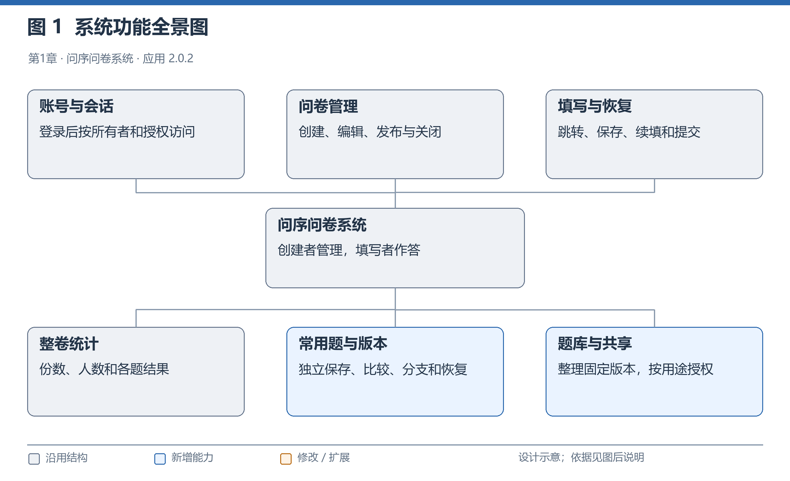
图 1 系统功能全景图
灰色部分是第一阶段已有能力，蓝色部分是第二阶段新增能力。原来的账号、问卷、填写和统计继续使用，新功能主要围绕可复用题目的管理展开。
为了避免混淆，先区分以下六个对象。
| 概念 | 通俗解释 | 主要标识 |
|---|---|---|
| 题目系列 | 同一道常用题的整体记录，例如“年龄题” | question_id |
| 题目版本 | 这道题某一次保存下来的固定内容，例如年龄题 v1、v2 | question_version_id |
| 问卷实例 | 题目放进某份问卷后的具体一次使用 | 问卷内题目 id |
| 问卷发布版本 | 问卷发布时保存的完整内容，也叫发布快照 | version_id |
| 填写过程 | 记录尚未正式提交的输入和进度，用于恢复 | attempt |
| 正式答卷 | 完整校验通过后保存的一次正式提交 | response |
例如，同一个年龄题 v1 可以导入问卷 A 和问卷 B，形成两个不同实例。两份问卷可以分别设置必答和跳转；发布后，各自保存完整快照。填写者提交的答卷再关联相应的问卷发布版本。
因此，“题目版本”和“问卷发布版本”是两种不同的版本，后文分别说明。
| 编号 | 需求 | 本阶段实现目标 | 主要验收内容 |
|---|---|---|---|
| R01 | 保存常用题 | 支持独立创建，以及从自有问卷保存题目 | 创建、另存、来源关联及历史答案不自动合并 |
| R02 | 共享题目 | 向指定账号授予确定版本的使用权 | 双账号隔离、撤销、未来版本不可见及禁止越权转授 |
| R03 | 修改不影响已有问卷 | 使用固定题目版本和完整发布快照 | 旧快照不变，旧填写过程仍按原版提交 |
| R04 | 历史、比较与恢复 | 查看修改历史、比较内容并恢复历史版本 | 父版本、恢复来源、分支和旧内容保留 |
| R05 | 不同版本并存 | 不同问卷或题库成员可以保留不同版本 | 不自动替换，不混合不同版本统计 |
| R06 | 使用追踪 | 查询草稿、当前发布和历史发布中的使用情况 | 按问卷去重，保护他人私密标题和详情 |
| R07 | 题库管理 | 支持个人题库、成员、排序、更新和移除 | 成员唯一性、修订冲突、分页、搜索及授权检查 |
| R08 | 跨问卷统计 | 汇总同一确定版本在有权限问卷中的回答 | 答卷数、作答条数、分布、均值及统计授权 |
这里的验收方式同时包括接口、数据库和前端组件检查。具体结果与尚未完成的人工验收在第七章说明，不能只凭功能存在就认定全部使用场景已经验证。
本阶段采用以下约定：
以上约定需要在报告和验收演示中说明，避免把“有权限范围内的汇总”写成能够无条件查看所有问卷的数据。
第一阶段的题目保存在各自问卷中，适合设计和发布一份完整问卷。但当题目需要跨问卷使用时，原有结构还需要补充以下能力。
第一，复制内容不能代替来源管理。
如果几份问卷分别复制同一道题，系统无法可靠判断它们是不是同一道常用题，也就难以查询使用情况或汇总答案。为此，需要独立的题目身份和明确的来源记录。
第二，新修改不能改变旧答案的含义。
假设年龄题已经被两份问卷采用，其中一份已经有人开始填写。此时作者修改题干，系统必须知道哪些问卷继续使用旧版、哪些主动升级，以及过去的答案对应哪次内容。
第三，允许使用题目不等于允许读取数据。
共享接收者可以把题目用于自己的问卷，但不应因此获得其他问卷的答案。题目使用权与统计访问权需要分别设计。
第四，旧功能必须与新结构同时工作。
第一阶段没有题目来源字段，旧问卷、旧发布快照和旧填写过程仍应继续使用。新增结构不能强迫旧数据补齐未知来源，也不能直接改写历史答案。
第五，更新和撤销可能与其他操作同时发生。
多人操作、多个页面以及请求先后返回，都可能造成状态冲突。例如预览后切换题目、导入时撤销授权、切换版本后收到旧统计结果，都需要明确处理。
因此，第二阶段需要同时实现题目复用、历史保护、权限隔离和旧功能兼容。后续设计围绕这些问题展开。
报告需要说明的八项“修改过程”，与前面的八项“功能需求”是两组不同内容。
功能需求使用 R01～R08 编号；修改过程则按下面的顺序说明。
| 必须说明的内容 | 报告中的主要位置 |
|---|---|
| 第一阶段的设计是什么 | 第二章 2.1 |
| 新需求带来了哪些问题 | 第一章 1.3、第二章 2.2 |
| 为什么需要修改原设计 | 第二章 2.3 |
| 修改了哪些部分 | 第二章 2.6 |
| 数据结构如何变化 | 第三章 |
| 程序如何调整 | 第二章 2.7～2.8及关键逻辑说明 |
| 是否遇到兼容性问题 | 第八章 |
| 如何保证旧功能仍然可用 | 第七章 7.4及第九章 |
八项功能需求的具体修改链集中在第二章 2.8，顺序与 R01～R08 一致。图 2 展示需求、设计和验证之间的对应关系。
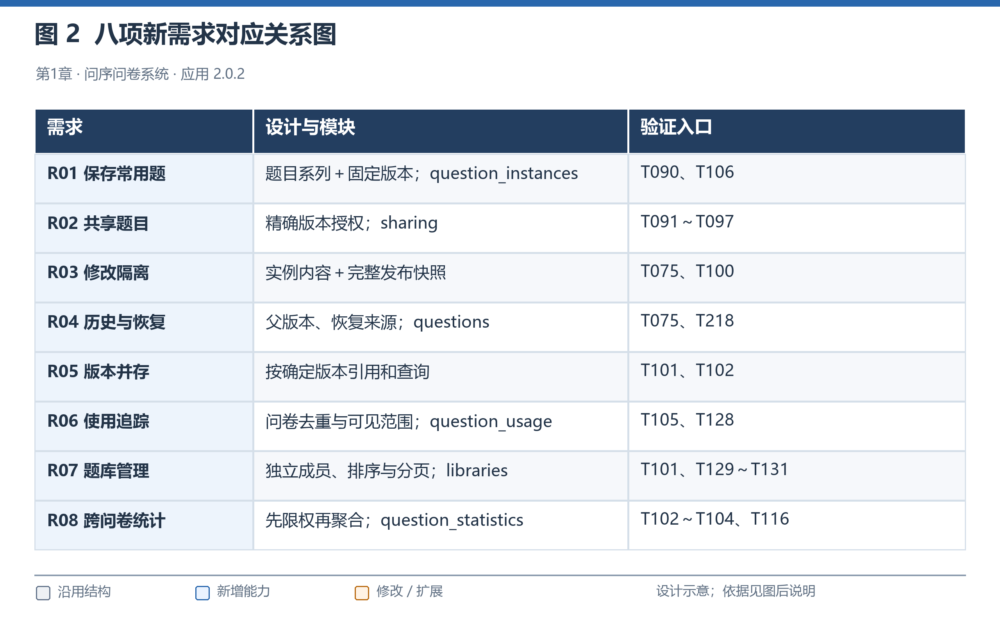
图 2 八项新需求对应关系图
一项设计可以支持多个需求。例如，固定版本既支持版本并存，也保护历史答案；来源记录既支持复用，也为使用查询和跨问卷统计提供依据。
后文的 T001～T260 是自动测试索引编号；测试文档中的“场景 T01”等是业务场景编号，两者分别使用，不按编号或场景行数重复累计测试数量。
完整对应关系见需求设计实现验证对照，具体测试名称和执行依据见逐项测试索引。
第一阶段采用Vue前端、FastAPI后端和MongoDB副本集。界面负责编辑和输入反馈，后端负责规则、权限、校验及事务，数据库负责持久化结构和唯一性。填写者通过应用访问数据，不需要直接连接MongoDB。
| 原集合 | 保存什么 | 原有结构为何保留 |
|---|---|---|
| users | 账号及密码哈希 | 第二阶段仍使用同一账号归属体系 |
| sessions | 服务端会话摘要和过期时间 | 新接口复用登录依赖，不另建认证 |
| surveys | 问卷归属、草稿、状态、revision、当前发布号 | 仍是问卷编辑和发布的聚合根 |
| survey_versions | 完整definition、发布版本号和引擎版本 | 历史作答必须按原定义解释 |
| attempts | 原始输入、绑定发布版本、恢复位置、状态、revision | 保留跨设备续填、冲突和原子提交 |
| responses | 正式答案、路径、提交时间、关联发布快照 | 保持原统计及匿名去重的解释基础 |
每道题记录题型、题干、选项和校验条件，问卷再单独设置必答和跳转。填写时，程序根据答案决定下一题；发布前检查配置是否能正常作答，提交时再检查实际走到的必答题。以前填过但后来被跳过的答案会被清理。
自动保存允许不完整原始输入，正式提交才进行完整验证。attempt与response分离，避免把半份回答当成正式统计。发布快照与草稿分离，避免问卷编辑立即改变正在填写的内容。这些设计均继续使用。
图 3 从相同的三层结构出发，说明第一阶段已经具备哪些能力。
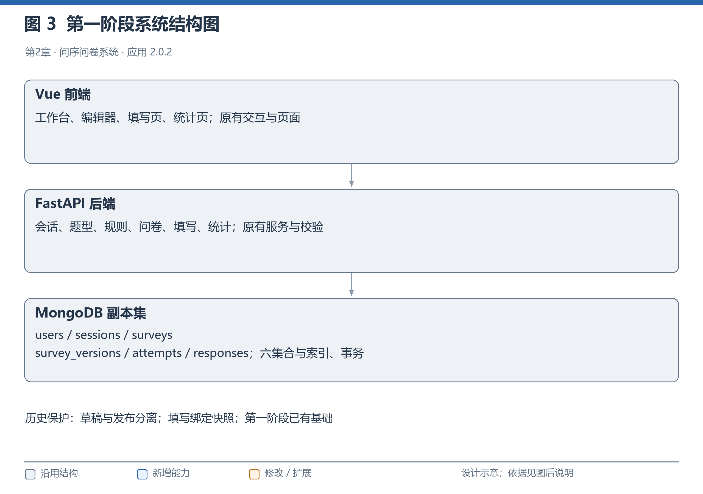
图 3 第一阶段系统结构图
前端通过后端访问数据库。发布快照、恢复填写和事务提交是后续扩展的基础。
核对依据：报告2.1、2.6；第一阶段至第二阶段文件变化.json。
原系统已经保存了问卷发布时的完整内容，因此具备保护旧问卷的基础。现在缺少的是独立管理题目的办法：题目属于谁、有哪些版本、谁可以使用、被哪些问卷采用，都需要有明确记录。
这些信息不能仅靠问卷里的题目ID表达，因为这个ID只用来区分当前问卷中的题目。第二阶段保留原问卷结构，在旁边增加题目和授权管理，再把两部分连接起来。
对照图 3，图 4 标明第二阶段在各层增加和调整的内容。
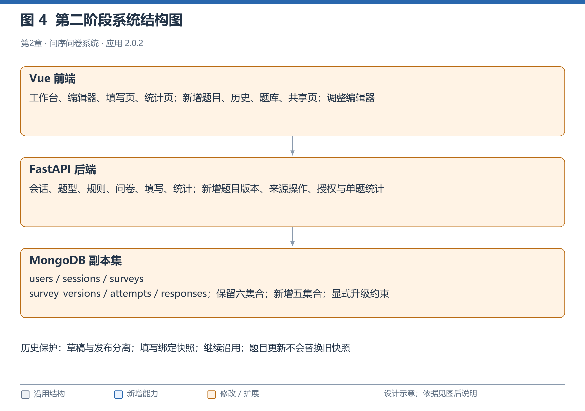
图 4 第二阶段系统结构图
第二阶段保留 Vue、FastAPI 和 MongoDB 核心结构，新增工作集中在题目管理与授权。原填写、规则和整卷统计继续复用。
核对依据：报告2.1、2.6；第一阶段至第二阶段文件变化.json。
最直接的办法是增加一个复制题目的按钮，但这样只能复制内容，不能管理来源和版本。另一个办法是让所有问卷都读取常用题的最新内容，但这会带来更严重的问题：题目一改，旧问卷也跟着变，已经提交的答案可能失去原来的含义。
本项目选择保留发布时的完整内容。常用题修改后保存成新版本，已经采用旧版本的问卷不自动改变。问卷创建者需要主动选择新版本，检查是否影响跳转，再发布更新后的问卷。这样既能复用题目，也能沿用第一阶段保护历史内容的做法。
具体实现分成四层：先保存独立题目，再保存它的各个版本；导入问卷时复制所选版本的内容，并记下来源；问卷发布时继续保存整份定义。正式答卷仍关联问卷的发布版本，不另外复制一套题目来源。可选方案和代价的详细比较放在数据库设计文档中。
图 5 沿实际使用顺序串起一份问卷的完整过程。
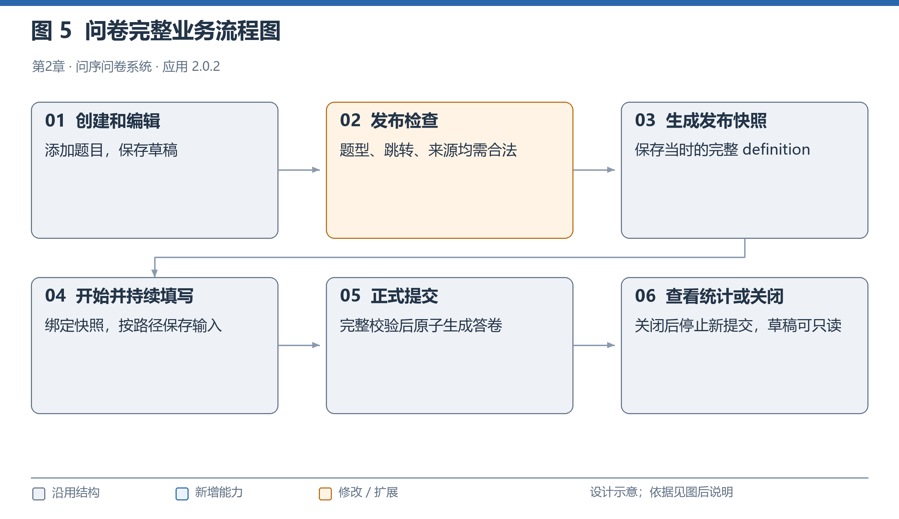
图 5 问卷完整业务流程图
编辑草稿和发布是两件事。修改草稿不会立即改变正在填写的内容，提交后的统计只读取正式答卷。
核对依据：services/surveys.py、attempts.py；报告2.7。
术语已在1.2定义。这里进一步说明对象之间如何关联。
题目系列 → 题目版本 → 导入为问卷实例 → 发布为完整问卷快照
填写过程 --version_id--> 问卷发布版本 <--version_id-- 正式答卷
两个版本编号分别属于题目和问卷；填写与正式答案绑定问卷发布快照。共享授权作用于确定题目版本，汇总授权还限定问卷范围，不能从题目所有权推导答卷读取权。
题目每次修改都新增一个版本，不覆盖旧内容。用户可以基于旧版继续修改，也可以把历史内容恢复成一个新版本。版本号表示创建顺序，编号最大不代表其他问卷必须采用它。
共享也以某一个版本为单位。作者把v1共享给另一位用户，不会同时把以后创建的v2也共享出去。接收者可以使用获授权的版本，但不能通过另存、解除来源等操作把共享题变成自己的题目。
此外，使用题目和查看答卷是两种权限。题目作者不能因为别人采用了自己的题目，就自动看到对方问卷的数据。需要跨问卷统计时，由相应问卷的所有者另外授权。
| 模块 | 保留的职责 | 新增或调整的程序 |
|---|---|---|
| 认证与数据库基础 | 会话、连接、索引初始化、事务 | 新路由复用原依赖；通过显式迁移扩展约束 |
| 请求模型 | 原问卷与答案模型 | 增加题目内容、来源、版本、授权、题库操作模型 |
| 问卷服务 | 创建、保存、发布、关闭 | 保存及发布核对来源，增加专用实例操作 |
| 领域逻辑 | 题型与有限跳转引擎 | question_versions处理内容/差异，question_sources核对来源 |
| 新增服务 | 原填写及问卷统计继续使用 | questions、sharing、libraries、question_instances、question_usage、question_statistics |
| 填写与提交 | 原状态机和事务 | 返回给填写者的定义移除内部来源字段 |
| 前端问卷编辑 | 原题型、规则、截止与保存保护 | 选题、来源只读、升级预览和确认 |
| 新增前端页面 | 原工作台、填写和统计 | Questions、QuestionEditor、QuestionHistory、Libraries、Sharing、QuestionUsage、QuestionStatistics |
| 测试和材料 | 原回归用例继续运行 | 新增版本、授权、兼容、统计和交互回归 |
关键文件入口为backend/app/phase2_routes.py、schemas.py、services/surveys.py、domain/question_sources.py和services/question_instances.py；前端入口为views/Editor.vue及composables/useSurveyEditor.ts。本次比较排除README、清单与缓存：65个文件字节未变、19个修改、29个新增、0个删除。完整新增、修改和未变化清单见测试证据“修订差异/第一阶段至第二阶段文件变化.json”。
后端新增phase2_routes、question_versions、question_sources、questions/libraries/sharing/question_instances/question_usage/question_statistics，沿用原数据库、认证、异常、规则和题型处理器。前端新增题目管理、题目编辑、历史、题库、共享与单题统计页面，以及选题、共享、使用情况、内容编辑组件。
编辑器通过专门来源操作导入、预览升级、升级、允许的解除和保存常用题。来源操作锁定编辑区；普通保存与截止时间未发布提示沿用原保护机制。所有界面禁用只提供反馈，真正权限在后端检查。
第一阶段的主要流程是：编辑题目，保存问卷草稿，发布，然后填写、提交和统计。第二阶段没有替换这条流程，而是在编辑前增加“创建或选择常用题”，在编辑时增加“导入和升级题目”。
导入时，后端读取用户选择的固定版本，生成新的问卷内题目，并记录它来自哪个系列和版本。此后，用户仍可为这道题设置必答、位置和跳转，但不能保留旧来源的同时直接改写题干或选项。内容变化应通过题目版本更新处理。
普通保存、发布和提交继续使用原服务。需要增加检查的地方主要是保存和发布：后端要确认来源没有被伪造，题目内容与所记录的版本一致。给填写者返回问卷时，则去掉内部的来源和授权信息。
后续的2.0.2修订还处理了几种页面操作问题。例如，预览A题的升级后再切换到B题，原确认必须失效；统计请求先后返回时，只能显示当前查询的结果。这些修改发生在编辑和查询环节，没有重写原填写与提交流程。
下面按八项需求说明具体做法。每项都从第一阶段的情况出发，再解释修改和验证；字段细节可查数据库文档。
第一阶段的一道题属于某份问卷，无法直接作为常用资源管理。第二阶段增加了独立题目和题目版本：前者记录所有者和最近版本，后者保存每次固定的题干、选项及校验。
新建常用题得到v1；从自己的问卷另存时，只提取题目内容，不带走问卷专属的必答和跳转。共享题不能借这个入口变成自己的题。旧题另存后，也只影响当前草稿，不会把过去的答案自动算到新常用题名下。相关测试检查了这些保存和拒绝情况。
保存常用题需要把题目内容与问卷专属配置分开，过程见图 6。
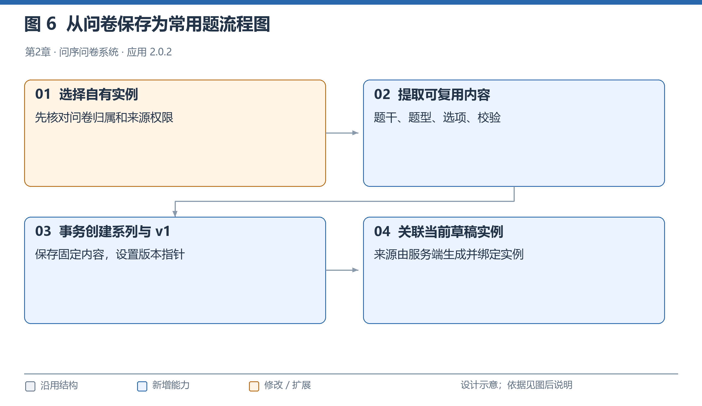
图 6 从问卷保存为常用题流程图
原问卷的必答与跳转不成为常用题内容；旧答卷也不自动归入新系列。来自他人的共享实例不能借此另存成自有题。
核对依据：services/question_instances.py；T090、T106。
共享的意思是允许另一个账号采用某个版本，而不是把题目和所有答案都交给对方。授权记录因此写明版本、接收者和用途，分别处理“使用题目”和“查看指定问卷的汇总统计”。
接收者只看到获授权版本，不能搜索到尚未共享的新版本。撤销后不能再新增导入，但撤销前已经合法导入的原实例继续可用。并发测试还分别检查了先导入、后撤销和先撤销、后导入的结果。
同一常用题版本可以有多次使用，图 7 以年龄题说明它们如何保持独立。
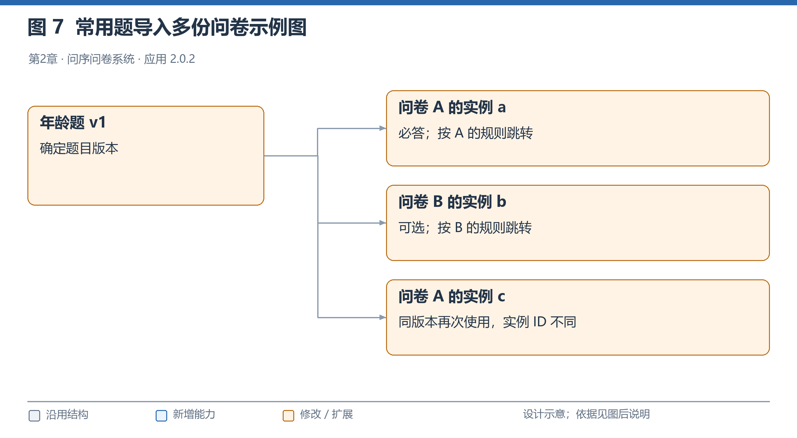
图 7 常用题导入多份问卷示例图
每次导入都有新的实例 ID，并保存当时内容。必答和 routing 属于实例；相同来源不意味着实例配置必须相同。
核对依据：services/question_instances.py；T090、T102。
以年龄题为例，如果v1已经发布并有人开始填写，作者把题干修改成v2后，不应让这个人中途换题。因此，系统保存v1的固定内容，发布后的问卷也继续保留当时的完整定义。
只有问卷创建者主动选择v2、确认升级并重新发布，之后新开始的填写才采用新发布内容。旧过程仍按原版本完成。测试比较了旧快照是否变化，也验证了发布新版后旧过程能否继续提交。
题目历史需要记录“这次基于哪个版本修改”和“恢复时内容来自哪里”。这两个问题用不同字段保存，不能混为一谈。
例如，当前是v3，用户希望恢复v1的内容，系统会新建v4。v4可以记录直接父版本为v3，内容恢复自v1；v1和v3本身都不修改。恢复取消不发请求，确认时防止重复点击。版本关系、回滚及组件测试已有记录，真实浏览器确认弹窗仍待人工复核。
同一道题的v1、v2可能同时被不同问卷使用，所以“这是哪道题”和“采用哪次内容”要分别记录。问卷中每次导入还会有自己的实例ID，即使同一个版本被放进同一份问卷两次，也能区分。
题库允许收录同系列多个版本，但不能重复加入同一个确定版本。创建新版本不会替换已有成员或问卷；统计时也分别查询不同版本。对应测试检查了重复成员、重复实例和版本隔离。
有了来源记录，系统才能知道一道常用题被哪些问卷使用。查询会分别查看当前草稿、当前发布和全部发布历史，再按问卷ID合并，避免把一份问卷的多个历史版本误算成多份问卷。
用户能看自己的问卷明细。题目作者可以看到外部使用的脱敏数量，但不能直接看到他人问卷标题和内容。历史发布包含当前发布，所以几个分类不能相加。已有测试验证了去重、隐私和共享接收者的页面入口。
题库用于个人整理题目：记录名称、收录的固定版本和排序。它本身不是授权渠道，把共享题加入题库并不意味着可以再共享给第三人。更新题库成员也不会改变已经导入的问卷。
成员更新时检查目标版本的使用权。如果旧版授权已撤销，但新版仍有授权，用户应当能够选择新版。页面切换题库时关闭旧窗口，提交时固定原目标，避免更新错库。排序、搜索、分页、撤销和切库场景都有相应回归记录。
原来的整卷统计继续使用。新增统计则回答另一个问题：同一道题的某个版本，在多份有权查看的问卷中，总共收到了什么回答。
程序先确定权限范围，再从正式答卷找到发布快照，按其中的来源识别目标题目。答卷数和作答条数分开计算：一份答卷里如果有两个该版本实例，就是一份答卷、两条作答。时间按正式提交时间筛选。
选择题统计选项次数和比例，数字题统计均值与分布。没有收到答案的问卷仍可能计入覆盖数，但不计入有作答问卷数。测试包含两份答卷、三条作答、均值40的例子，并检查权限撤销、版本隔离和异常边界。
本阶段的数据库设计围绕三个问题展开：题目怎样独立复用，修改后怎样保留历史，以及新结构怎样与第一阶段的数据共存。
整体方案保留第一阶段的六个集合，新增五个集合管理题目、版本、题库和授权。问卷继续保存完整定义，正式答卷继续关联发布快照，避免新功能改变旧答案的含义。
第一阶段主要围绕“一份问卷从创建到提交”的流程组织数据，第二阶段则增加了可跨问卷使用的题目资源。
这些对象的用途和变化方式不同，不适合全部放进同一个集合或文档。
| 集合 | 保存内容 | 单独保存的原因 |
|---|---|---|
users |
用户账号及密码哈希 | 统一管理账号身份 |
sessions |
服务端会话及过期信息 | 会话有独立的产生、退出和过期过程 |
surveys |
问卷归属、草稿、状态及修订信息 | 集中处理问卷编辑和管理 |
survey_versions |
发布时的完整问卷定义 | 保留历史内容，供填写和答案解释使用 |
attempts |
尚未正式提交的输入、进度和状态 | 支持自动保存和恢复，不混入正式统计 |
responses |
正式答案、路径和提交信息 | 答卷持续增长，需要独立存储和查询 |
questions |
常用题系列的所有者、状态和版本指针 | 管理“这是哪一道题” |
question_versions |
每次固定的题目内容和版本关系 | 管理“这道题某一次是什么内容” |
question_libraries |
个人题库的名称、归属和修订信息 | 题库基本信息独立管理 |
question_library_items |
题库收录的确定版本及排序 | 方便成员分页、排序、更新和移除 |
resource_grants |
使用或汇总授权的范围、接收者和状态 | 授权能够单独授予、撤销和核对 |
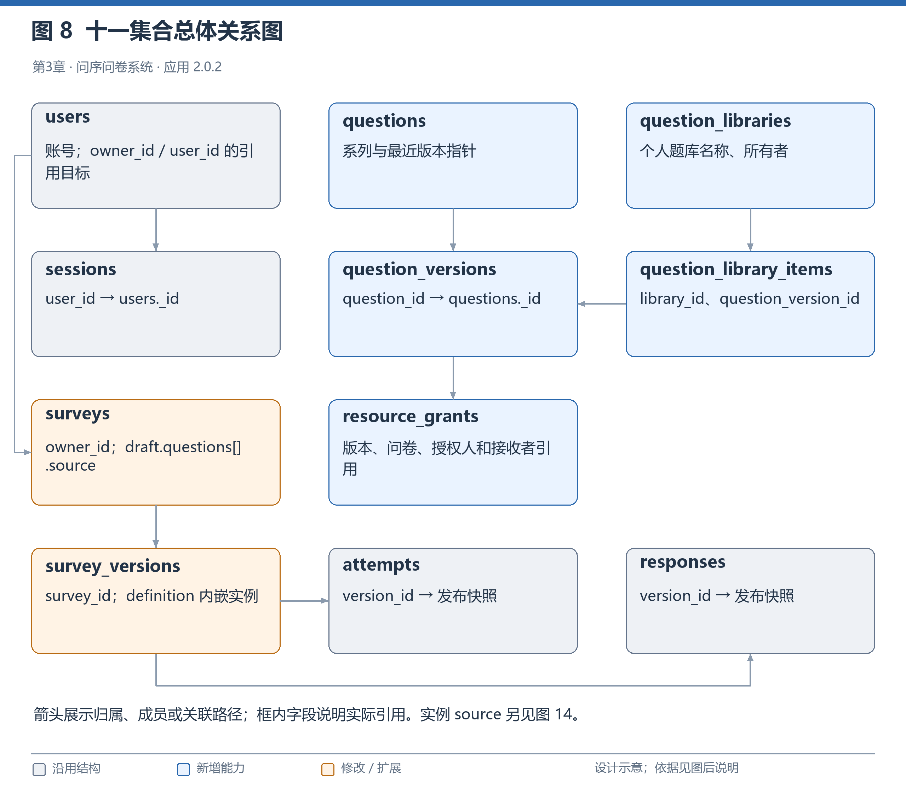
图 8 十一集合总体关系图
例如，撤销一次共享只应改变授权状态，不应删除题目，也不能破坏已经发布的问卷。因此，授权与题目内容分开保存。题库名称和成员也分开，避免成员增加时不断扩大同一个题库文档。
图中的关联由应用程序维护，不代表 MongoDB 会自动执行关系数据库式的外键检查。版本是否属于对应题目、用户是否拥有资源等关系，仍需后端核对。
不同数据不能采用同一种更新规则。
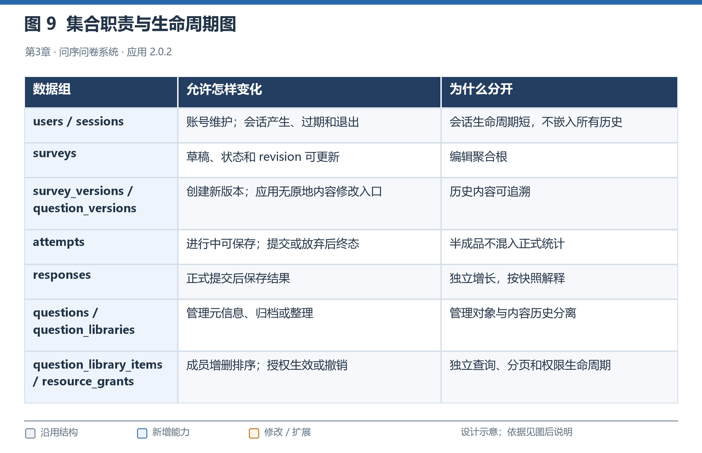
图 9 集合职责与生命周期图
问卷草稿需要反复修改；题目版本和发布快照需要保留当时内容；填写过程会从进行中进入已提交或已放弃状态；授权则可以生效和撤销。
将这些数据分开，可以缩小一次操作的影响范围。例如，修改题目管理信息不会覆盖历史内容，保存半份回答也不会生成正式答卷。
这里的“版本不可变”是指应用不提供覆盖旧版本内容的入口，不表示数据库管理员无法直接修改文档。
一份问卷中的题目、选项、校验和跳转通常需要一起读取、检查和发布，因此继续嵌入问卷定义。
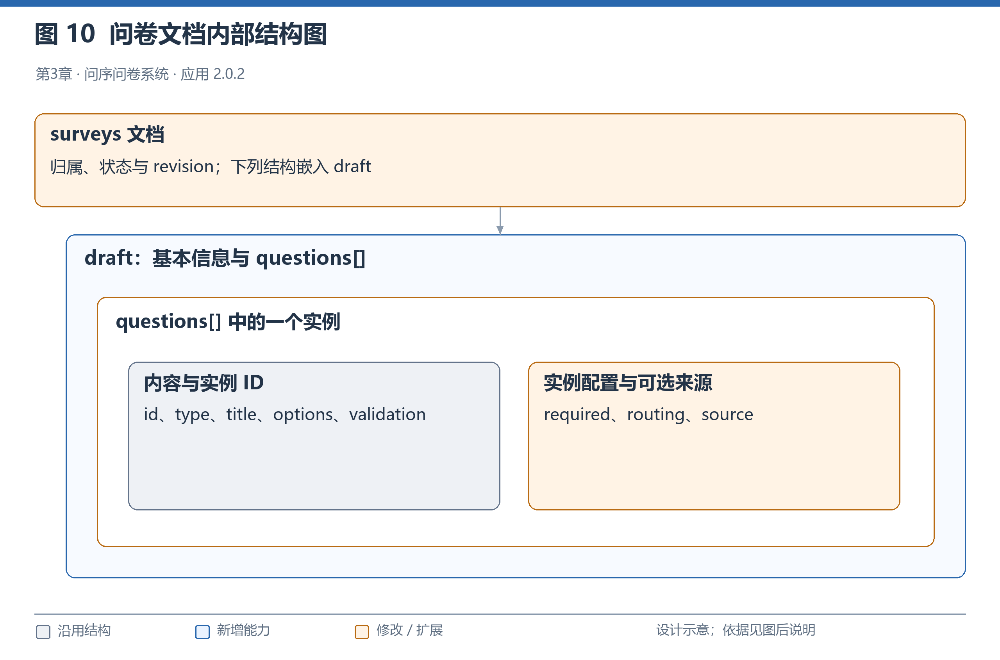
图 10 问卷文档内部结构图
draft.questions[] 中的每个元素都是一个问卷实例，保存实例 ID、题目内容、必答和跳转。第二阶段增加可选的 source，记录采用哪个独立题目版本。
source 用于说明来源，并不替代实例中的题目内容。这样，问卷不会在填写时因为题库更新而自动换题。
关系数据库同样能够实现问卷系统。用户、题库成员和授权都有明确关系，可以通过表、外键和关联查询表达；关系数据库配合 JSON 保存问卷定义，也是可行方案。
本项目继续使用 MongoDB，主要基于以下考虑：
符合课程要求，并延续第一阶段实现。
第二阶段需要在原代码和数据库基础上扩展，更换数据库会扩大修改范围。
问卷经常需要整份读取。
编辑、发布和填写都需要题目、选项、校验及跳转条件。完全拆表后，读取完整定义通常需要关联查询或程序组装。
历史版本需要完整重建。
直接保存发布时的文档，能够明确保留当时的题目与规则，减少历史读取时重新拼装的工作。
这属于访问方式和开发范围的取舍，不能据此认定关系数据库无法实现，或未经测量就声称 MongoDB 一定更快。
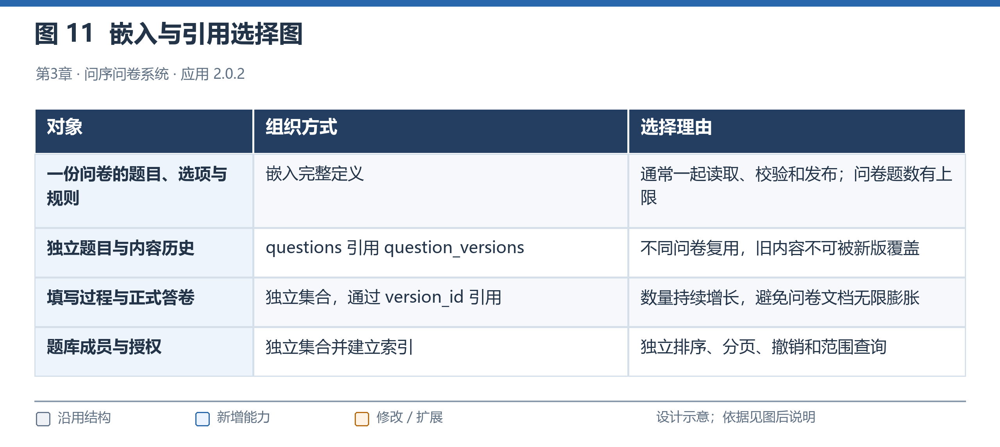
图 11 嵌入与引用选择图
本项目采用混合方式：一起使用的问卷定义嵌入保存，独立管理或持续增长的数据通过引用关联。
选择题需要选项，数字题需要范围和整数限制，文本题需要长度限制。不同题型既有共同字段，也有各自配置，适合通过文档中的嵌套结构表达。
跳转条件还可以包含 all、any 等组合，文档能够直接保留条件层次。但字段允许不同，不代表可以随意写入，结构仍受 Schema 和后端校验约束。
题目版本保存某次固定内容，问卷发布版本保存完整定义。读取历史答案时，可以找到当时使用的内容，不必读取题目最新版。
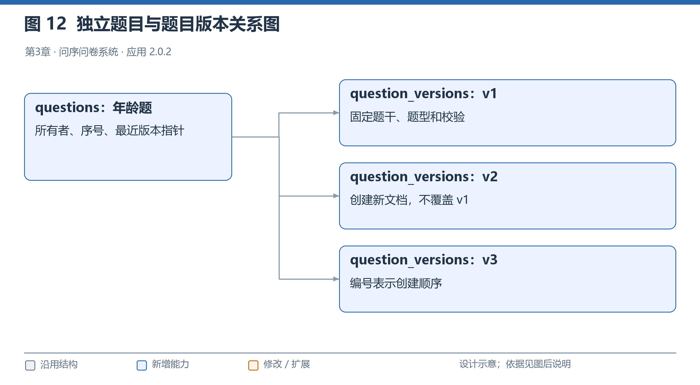
图 12 独立题目与题目版本关系图
question_id 识别题目系列，question_version_id 识别确定版本。latest_version_id 用于管理和提示，问卷不会因为这个指针变化就自动升级。
答卷、题目历史、题库成员和授权记录会增加，因此使用独立集合，避免一个文档无限增长。
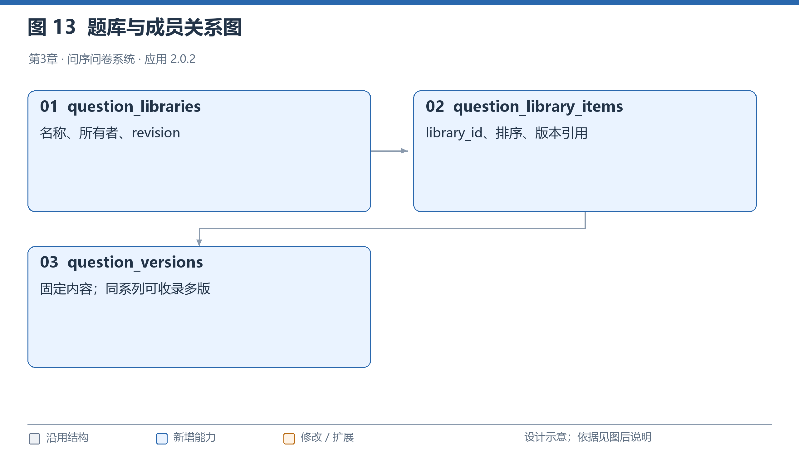
图 13 题库与成员关系图
题库成员指向确定版本。同一题库可以收录同系列不同版本，但不能重复加入同一个确定版本。
题库只是整理工具，不是新的授权渠道。把共享题放入自己的题库，不会获得转授给第三人的权限。
导入题目时，问卷实例保存两部分信息：
这是为历史稳定性保留的内容副本，需要明确一致性维护方式。
后端在导入时读取真实版本生成实例，在普通保存和发布时核对来源与内容。不能保留 v1 来源，却将题干、选项或校验改成另一份内容。来源也不能复制到其他实例或问卷作为授权证明。
正式答卷已有 version_id，可以沿发布快照找到实例来源。
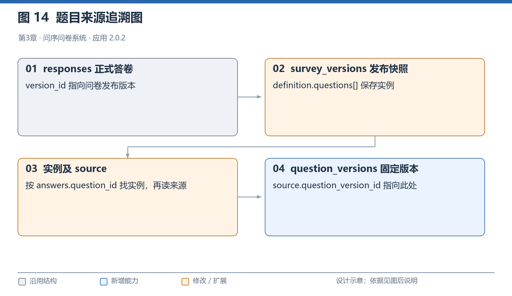
图 14 题目来源追溯图
追溯过程为：
正式答卷的 version_id
→ 问卷发布快照
→ 按答案中的 question_id 找到问卷实例
→ 读取实例 source
→ 定位独立题目版本
答案中的 question_id 表示问卷实例 ID，不是独立题目系列 ID。沿原快照查找，才能准确解释当时的答案。
因此，正式答案不再保存第二套来源，减少重复数据和维护成本。没有来源的旧实例仍按原定义解释，不强行关联到新系列。
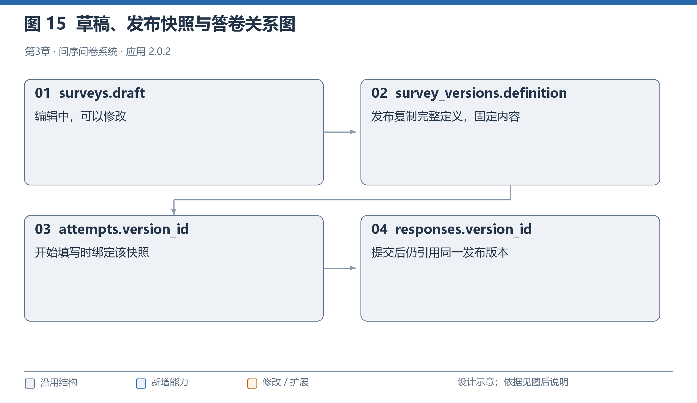
图 15 草稿、发布快照与答卷关系图
草稿负责编辑，发布快照负责固定内容，填写过程绑定开始时的发布版本，正式答卷继续关联该版本。
即使填写期间发布了新版，原 attempt.version_id 也不切换。当前使用追踪直接查询草稿和发布记录，没有额外维护使用缓存；后续如有性能问题，应先测量，再决定是否增加冗余。
数据库约束集中保存在：
Schema 不只要求顶层是对象，还约束必要字段、类型、嵌套结构、枚举和适用的范围。错误结构即使绕过 API 直接写库，也应被拒绝。
但 Schema 不能独自证明来源真实、版本归属正确或用户拥有权限，这些仍由后端判断。
本阶段共有 22 个显式索引，包括第一阶段的 11 个和第二阶段新增的 11 个，不包含 MongoDB 自动创建的 _id 索引。
索引主要用于：
索引可以支持查询，但本项目没有据此给出未经测试的性能提升比例。
创建版本需要同时分配序号、插入内容版本并更新最近版本指针。如果插入失败，其他修改也应撤销。
题库成员变更与题库修订号更新、正式答卷写入与填写过程完成，也需要保持一致。
| 机制 | 主要职责 |
|---|---|
| Schema | 检查文档结构和字段值范围 |
| 索引 | 支持查询并约束唯一性 |
| 事务 | 保证相关写入一起完成或撤销 |
revision |
检查请求是否基于过期状态 |
| 后端业务校验 | 判断来源、权限、跳转和状态是否合法 |
并发导入与撤销还需要共同的写入边界。只读授权、再写其他文档，不一定发生冲突。因此，操作会触及共同协调记录；冲突重试后重新检查授权，以成功提交顺序决定结果。
兼容处理保留以下原则：
旧题可以没有来源。
source 为可选扩展，旧问卷继续使用，不猜测其来源。
旧填写过程继续绑定原快照。
不因题库或问卷更新，替换已经开始的填写内容。
正式答案结构保持原样。
来源通过快照追溯，不批量重写旧答案。
普通启动不覆盖旧约束。
发现结构不一致时，先检查并通过显式迁移处理。
已有记录核对了原六集合文档，约束升级前后未改写业务文档；独立测试也检查了纯第一阶段样本的读取、升级和回退保护。
这说明已验证样本可以兼容，不代表未知未来需求已经得到保证。
| 对象 | 第一阶段 | 第二阶段调整 | 兼容方式 |
|---|---|---|---|
users、sessions |
账号与会话 | 继续使用 | 保留原身份体系 |
| 问卷草稿中的实例 | 内容、必答和跳转 | 增加可选 source |
旧题不要求补来源 |
surveys 管理信息 |
状态与修订信息等 | 增加草稿问题提示和协调字段等 | 提示不能代替发布校验 |
| 发布快照中的实例 | 完整发布内容 | 新发布可以包含来源 | 不回写旧快照 |
attempts |
原始输入、状态、绑定版本、修订号 | 集合结构保留 | 继续读取原快照 |
responses |
正式答案、路径和提交信息 | 集合结构保留 | 答案项仍为实例 ID 与值 |
questions |
无 | 新增系列管理信息 | 不影响旧题 |
question_versions |
无 | 新增固定内容和版本关系 | 新版本追加，不覆盖旧内容 |
| 题库及成员 | 无 | 新增两个集合 | 成员固定到确定版本 |
resource_grants |
无 | 新增使用与汇总授权 | 按资源、用途和接收者检查 |
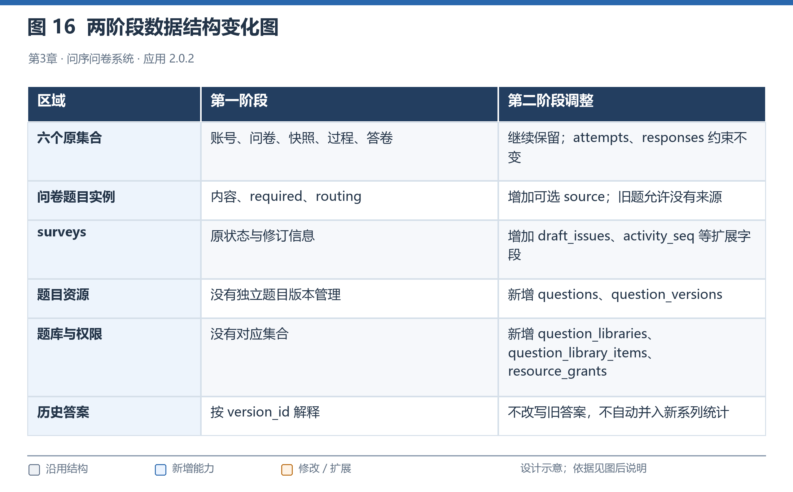
图 16 两阶段数据结构变化图
“结构保留”不等于全部原文件未修改。例如，为了不向填写者暴露内部来源，返回定义的处理有所调整，但填写状态机和正式答案格式继续使用。
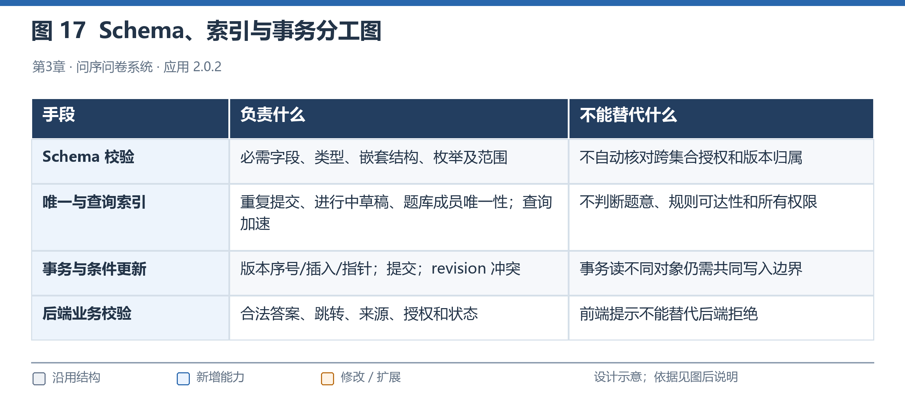
图 17 Schema、索引与事务分工图
例如，题库成员不能重复由唯一索引约束，目标版本是否可用由后端检查，相关写入是否完整由事务保证。几层机制需要配合，前端禁用按钮不能替代它们。
完整字段类型、索引组合和边界说明见数据库设计。
第一阶段的旧实例可以没有来源，例如：
{
"id": "age_local",
"type": "number",
"title": "年龄",
"required": true,
"options": [],
"validation": {
"min": 0,
"max": 120
},
"routing": {
"rules": [],
"default_target": null
}
}
第二阶段通过合法导入生成来源，以下仅展示 source 的示意内容：
{
"question_id": "series_age",
"question_version_id": "age_v1",
"version": 1,
"survey_id": "survey_demo",
"instance_id": "age_local",
"imported_by": "owner_demo",
"imported_at": {
"$date": "2026-10-26T00:00:00Z"
},
"grant_id": null
}
这个片段不是完整集合文档，时间采用 MongoDB Extended JSON 表示，不能直接当作完整 API 请求提交。实际来源由后端生成，客户端在普通保存时携带它，只用于一致性核对。
正式答案仍然可以是：
{
"question_id": "age_local",
"value": 25
}
其中 age_local 是问卷实例 ID。通过答卷的发布版本找到该实例，再读取来源，即可确定独立题目版本，无须在答案中重复保存来源。
数据库升级由 backend/scripts/migrate_phase2.py 提供入口，处理顺序为：
集合约束修改不是一个能够跨所有集合统一回滚的业务事务，因此必须保留日志。恢复前还要检查日志归属、约束是否被其他操作改变，以及是否已经产生新业务数据。
如果已有第二阶段题目或来源数据，程序会阻止仅恢复旧约束；需要依据维护前完整备份安排恢复，不能让旧程序直接读取不兼容的新结构。
如果数据库已经是第二阶段 2.0.1，更新到 2.0.2 不需要再次迁移本轮数据库结构，只需更新对应程序和前端构建。
另外，更新时应保留原 SECRET_KEY，避免影响已有凭证及匿名身份、填写恢复等相关机制。若未来需要关联旧答案，应另行设计并确认对应关系，不能按题干相同自动补写来源。
跳转解决的是“回答完这一题，下一步去哪里”。本章先说明完整执行过程，再介绍条件、匹配顺序和异常处理，最后对照第二阶段的变化。图中的四题问卷用于解释机制，不作为新增测试执行记录。
创建者先为题目配置条件和目标；发布时，后端检查这些配置是否合法；填写时，页面与服务端根据有效答案计算路径；正式提交时，后端再按原发布快照重新计算，不能直接相信页面传来的路径。
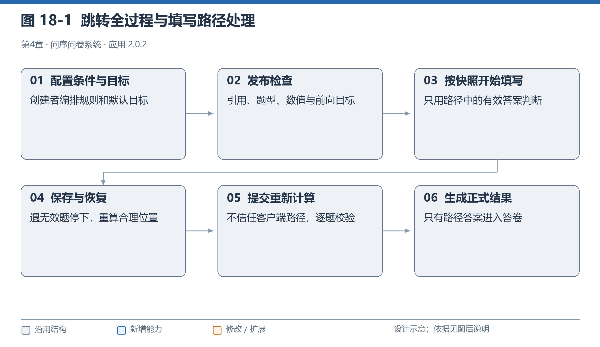
图 18-1 跳转全过程与填写路径处理
这条流程贯穿配置、发布、填写、恢复和提交。保存草稿不代表已经可以发布；页面显示到最后一题也不代表可以跳过提交检查。配置错误在发布前反馈，答案错误在填写和提交时反馈。
一条普通条件包含引用题目、运算符和比较值，再配上跳转目标。多条规则与默认目标一起保存在当前实例的 routing 中。
| 字段 | 表示什么 | 四题示例 |
|---|---|---|
condition.question_id |
读取哪道题的有效答案 | q1 |
condition.operator |
采用什么比较方式 | eq，即等于 |
condition.value |
和什么值比较 | 选项 ID no |
target |
该规则成立时去哪里 | q3 |
default_target |
所有规则均未命中时去哪里 | null 表示继续下一题 |
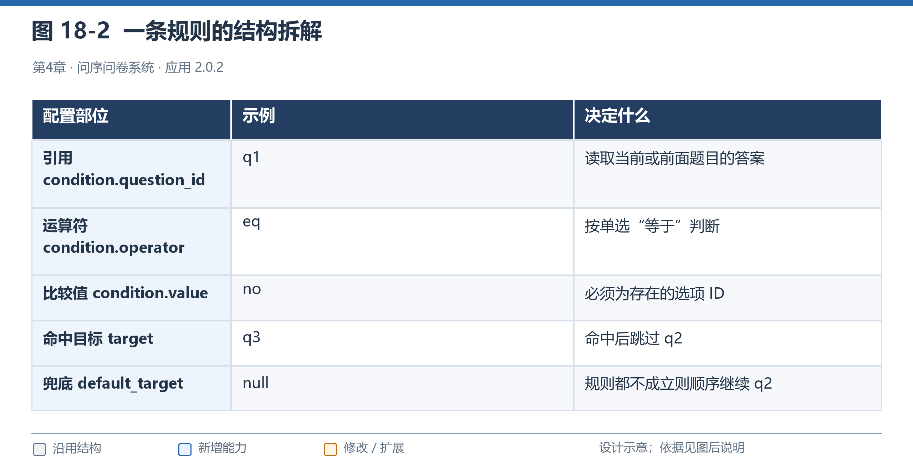
图 18-2 一条规则的结构拆解
下面是 Q1 的示意配置：选择“否”时跳过 Q2，其他情况下顺序进入 Q2。yes/no 是选项 ID，不能直接把显示文字当作所有问卷通用的 ID。
{
"rules": [
{
"condition": {"question_id": "q1", "operator": "eq", "value": "no"},
"target": "q3"
}
],
"default_target": null
}
这是局部配置，不是完整问卷。END 表示结束路径；null 表示没有指定跳转目标，继续下一题，两者含义不同。通过正常 API 保存的每条规则 target 必须是非空目标字符串；空值用于 default_target，不能把缺少规则目标当成合法规则。
运算符必须与被引用题目的类型匹配，不能把数字比较放到选择题上，也不能把未实现的文本关键词匹配写成已有功能。
| 题型或组合 | 代码中的运算符 | 判断方式及示例 |
|---|---|---|
| 单选 | eq、ne |
等于或不等于某个有效选项 ID |
| 多选 | contains_any |
与指定选项集合至少有一项相同 |
| 多选 | contains_all |
包含指定集合的全部选项，可额外选择其他项 |
| 多选 | set_equals |
两个选项集合完全相同，不要求排列顺序相同 |
| 数字 | eq、ne、gt、gte、lt、lte |
等于、不等于、大于、大于等于、小于、小于等于 |
| 数字 | between |
位于闭区间内，例如 [18,30] 包含 18 和 30 |
| 文本 | 无 | 当前不提供文本条件运算符 |
| 组合 | all |
所有子条件成立才成立 |
| 组合 | any |
至少一个子条件成立就成立 |
例如，已选工具为 [MongoDB,Redis] 时，“包含任意 [MongoDB,MySQL]”成立，“包含全部 [MongoDB,MySQL]”不成立，“集合等于 [Redis,MongoDB]”成立。
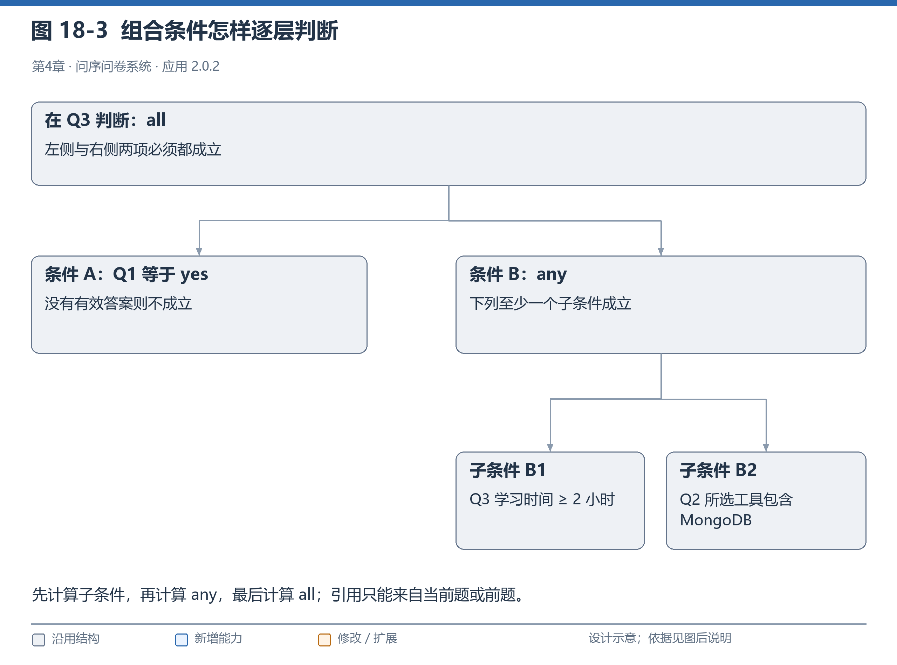
图 18-3 组合条件怎样逐层判断
图中示例在 Q3 配置：Q1 为“是”，并且“Q3 学习时间至少 2 小时”或“Q2 选择了 MongoDB”至少满足一个。这里用当前题和前题说明嵌套关系，不新增另一份问卷。
没有有效答案时，普通条件返回不成立，连 ne 也一样。因此，“未回答”不能被当成“不等于某选项”的有效答案；已跳过的旧答案也不能通过组合条件重新参与分支。
规则按列表顺序检查，第一条命中就停止。若两条条件都能成立，排在前面的优先；系统不会自动选择“更具体”的条件，也不会同时跳向两个目标。
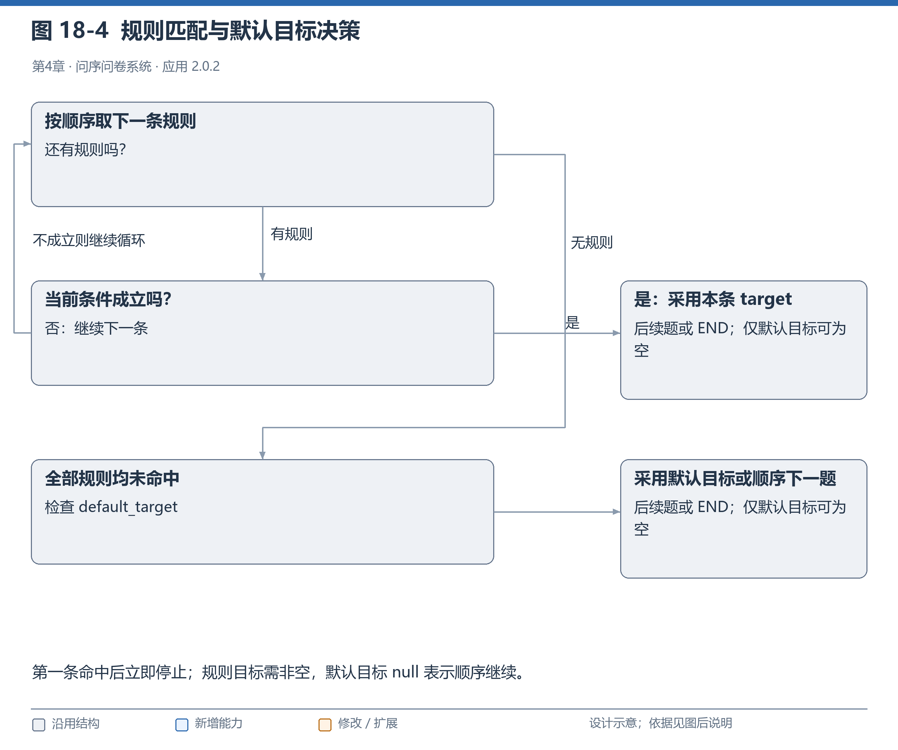
图 18-4 规则匹配与默认目标决策
| 检查结果 | 下一步 |
|---|---|
| 某条首先命中，目标为后续题 | 跳到该题 |
某条首先命中，目标为 END |
结束路径，仍需提交检查 |
全部未命中，默认目标为后续题或 END |
采用默认目标 |
| 全部未命中，默认目标为空 | 继续下一题；已是末题则自然结束 |
如果规则配置合法但与创建者意图不符，例如过于宽泛的规则排在前面，这是配置优先级问题，需要调整顺序或条件，不能由程序猜测。
发布检查不仅验证 JSON 能否解析，还检查题目引用、类型、比较值和目标位置。问卷需要 1～100 道题；实例 ID 不能重复或使用保留值 END。
| 检查项 | 合法要求 | 会被拒绝的例子 |
|---|---|---|
| 规则结构 | 每条规则包含 condition 与 target；普通条件字段完整 |
缺少 condition |
| 条件引用 | 引用存在的当前题或前题 | Q1 的规则依赖 Q3 的回答 |
| 跳转目标 | 规则指向存在的后续题或 END；默认目标可为空 |
跳到自身、前题或不存在的题 |
| 单选比较值 | 存在的选项 ID | 引用已删除的选项 c |
| 多选比较值 | 非空数组，无重复，全部选项存在 | [a,a] 或空数组 |
| 题型与运算符 | 与表 4.3 对应 | 文本使用 gt |
| 数字条件 | 有限安全数值，绝对值不超过 10^15 |
无穷大或超范围值 |
| 数字区间 | 两个值，下界不大于上界 | between=[30,18] |
| 数量限制 | 每题至多 20 条规则；每组 1～20 个子条件 | 空的 all 或超量规则 |
| 嵌套限制 | 从根深度 0 递归检查，深度不得超过 5 | 过深条件树 |
只允许向后或结束，可以避免循环。但“无循环”不等于所有条件一定会触发，也不承诺自动证明每道题都能被访问。当前校验聚焦结构、引用、类型与前向目标，不应夸大为任意复杂逻辑的数学证明。
以下四题贯穿本章：Q1 是否使用数据库；Q2 使用哪些工具；Q3 计划学习多少小时；Q4 有什么建议。
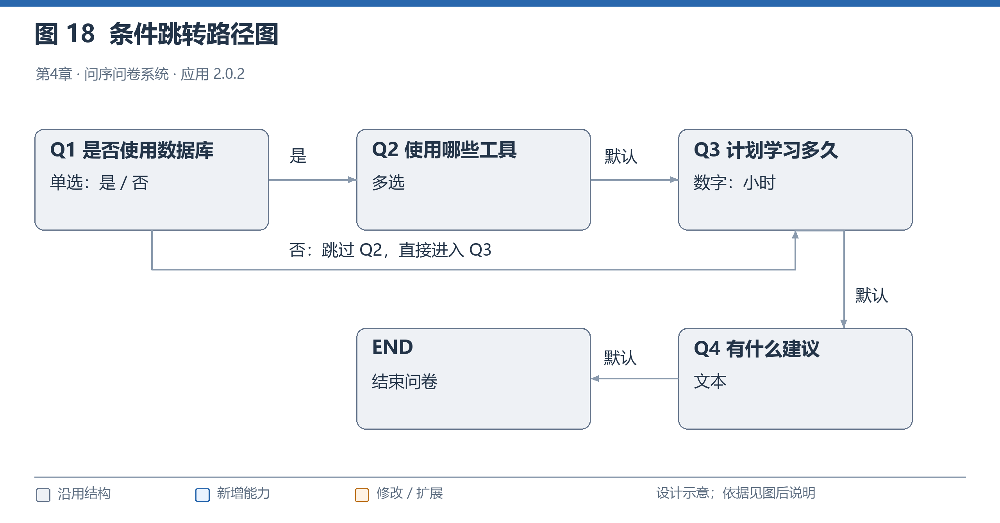
图 18 条件跳转路径图
Q1 选择“是”时，路径为 Q1 → Q2 → Q3 → Q4；选择“否”时，路径为 Q1 → Q3 → Q4。Q2、Q3 默认顺序前进，Q4 后自然结束或明确指向 END。
如果先选“是”并回答 Q2，再把 Q1 改为“否”，程序必须重新计算，不能只隐藏 Q2。
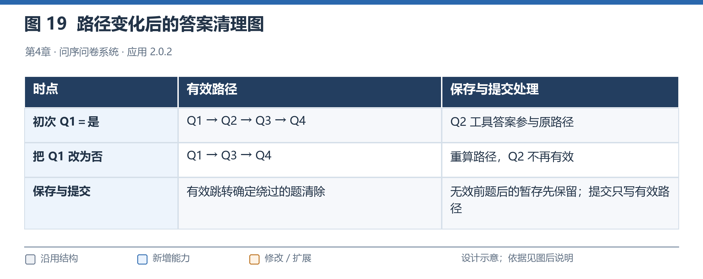
图 19 路径变化后的答案清理图
服务端保存时清除已经由有效跳转确定绕过的答案；有效 END 后的答案也被清除。若前题输入尚不合法，程序不能确定后续完整路径，会先保留其后的暂存原始输入，等前题修正后重新判断，而不是一概删除。
正式提交只写入重新计算出的有效路径答案。被跳过的旧内容不参与分支和正式统计，路径外的必答题也不要求填写。
同一引擎参与几个时点，但严格程度不同，可结合图 18-1 理解。
| 时点 | 路径怎样计算 | 遇到错误怎样处理 |
|---|---|---|
| 页面填写 | 根据当前答案提示路径 | 页面提示用于交互，不能作为提交凭据 |
| 自动保存 | 按原快照解析、校验当前输入，从第一题前进 | 到第一道无效题停止，不用无效答案决定分支或默认路径；保存允许不完整 |
| 恢复 | 读取原快照与服务端已保存输入，重算路径 | 优先回到需修正题；位置提示只能在合理路径内使用 |
| 正式提交 | 服务端重新规范化草稿答案，再运行完整 evaluate |
收集实际路径中的逐题错误，有错误则拒绝；无错误才生成正式答案与路径 |
例如 Q3 输入 - 可以作为尚未完成的数字输入暂存，但不能拿它与数字比较。自动恢复不能信任客户端声称“已经到了 Q4”。提交阶段也不能因出现 END 就忽略此前路径上的错误：结束路径后仍检查收集到的问题。
第二阶段保留规则引擎，变化集中在题目来源和升级对配置的影响。
| 内容 | 第一阶段 | 第二阶段 | 变化理由 |
|---|---|---|---|
| 规则执行 | 首条命中、默认、向后或结束 | 继续沿用 | 原引擎可以处理新实例 |
| 跳转归属 | 问卷内题目配置 | 仍属于问卷实例 | 不同问卷的前后关系不同 |
| 题目导入 | 没有独立题目版本导入 | 新实例 ID，初始化空规则与空默认目标 | 不复制其他问卷的目标 ID |
| 题目升级 | 编辑当前问卷内容 | 保留实例 ID、必答和 routing，替换版本内容 | 由用户修复受影响规则 |
| 发布检查 | 检查原题型与跳转 | 增加来源内容一致性 | 不能标旧来源却写新内容 |
| 历史填写 | 绑定完整发布快照 | 继续沿用 | 新版题目不改变旧过程 |
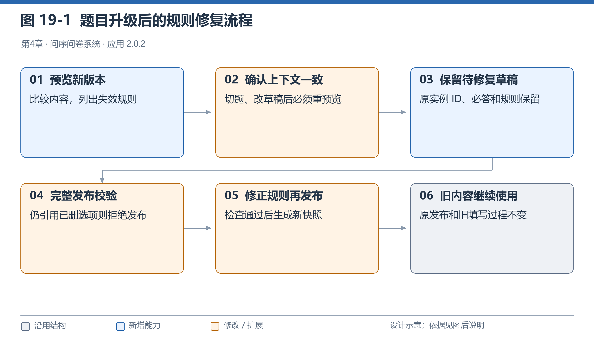
图 19-1 题目升级后的规则修复流程
例如新版删除选项 c，旧规则仍判断 c：预览列出问题，确认后可保留待修复草稿；系统不偷偷删除规则。修复前不能发布，修复后完整检查通过才生成新快照，旧快照和旧填写过程不变。
依据：domain/rules.py、services/attempts.py、services/question_instances.py；现有测试 T099、T100 及原路径、条件和失效答案测试。这里说明已有实现，不声称本次重新执行业务测试。
校验解决的是“这份配置能否使用、这次操作有没有权限、这些输入能否保存或提交”。本章按层次和生命周期展开，区分问卷设计草稿、填写草稿和正式答卷，最后对照两阶段变化。
页面提示帮助用户及时改错，但请求也可能由其他客户端直接发送，所以后端不能省略检查。数据库负责最后的文档结构和唯一性约束，也不能代替业务权限判断。
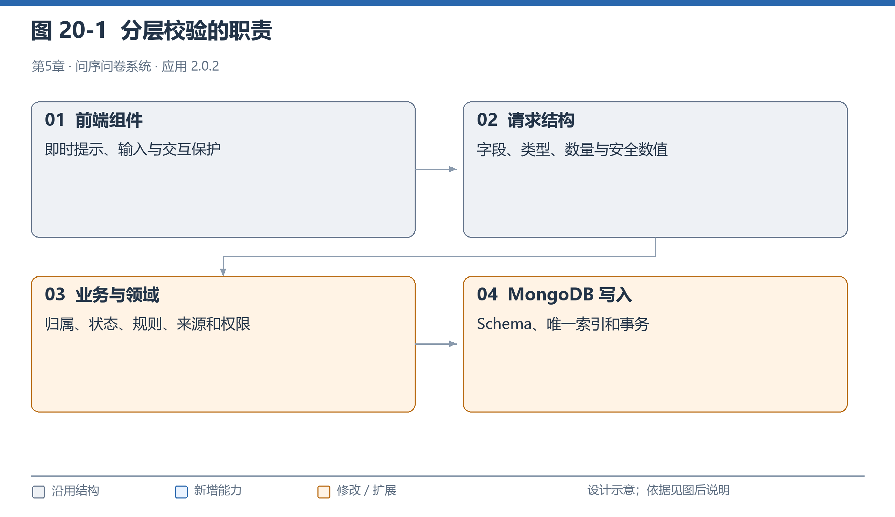
图 20-1 分层校验的职责
| 层次 | 检查什么 | 不能代替什么 |
|---|---|---|
| 前端组件 | 输入提示、规则 JSON 检查、保存状态与操作保护 | 服务端校验和权限 |
| 请求模型 | 字段、类型、数量、嵌套与安全数值 | 跨集合归属和真实来源 |
| 业务服务与领域逻辑 | 所有权、授权、状态、revision、题型、路径和来源 | 数据库唯一性与关联写入原子性 |
| MongoDB | 集合 Schema、唯一索引及事务写入 | 题意、可作答性和用户操作权限 |
请求还会拒绝未知字段和过深嵌套，统一数值检查的递归深度上限为 32。问卷标题至多 200 字符、说明至多 5000，题干至多 500，选项 ID 采用 1～64 位限定字符，选项文字至多 200。具体字段类型和上限由 schemas.py 与集合约束共同定义。
账号也有入口检查：用户名为 3～40 字符并满足允许字符模式，密码为 8～128 字符；注册检查重名，登录核对密码，会话过期不能执行需登录操作。资源服务再分别核对问卷、题目、题库和过程归属，不能仅凭已登录就访问他人对象。
例如，数据库能拒绝答案项缺字段，却不能仅靠“最小值、最大值都是数字”判断必答整数题是否有合法答案。下文分别说明这些检查。
配置校验面向问卷创建者，答案校验面向填写者，两者不能混用。
| 题型 | 配置检查 | 非空答案检查 |
|---|---|---|
| 单选 | 2～100 个选项；选项 ID 唯一、文字非空；不接受不支持的 validation 字段 | 字符串且为有效选项 ID |
| 多选 | 继承选项检查；0≤最少项≤最多项≤选项数，上下限为整数；必答至少允许选一项 |
字符串数组、无重复、选项都存在、数量在范围内 |
| 文本 | 无选项；长度为整数且 0≤最短≤最长≤10000；必答最长至少允许一个字符 |
字符串，去除首尾空白后按 Unicode 码点检查长度 |
| 数字 | 无选项；上下界为安全数值、下界不大于上界；整数限制为布尔值；必答整数范围中存在整数 | 真正的安全数字，范围合法，必要时必须为整数 |
统一的数字安全边界为有限数值且绝对值不超过 10^15，布尔值不能冒充数字。数字填写框保存的字符串先经过格式检查和规范化，再进行题型校验；不能把任意字符串直接当作数值。
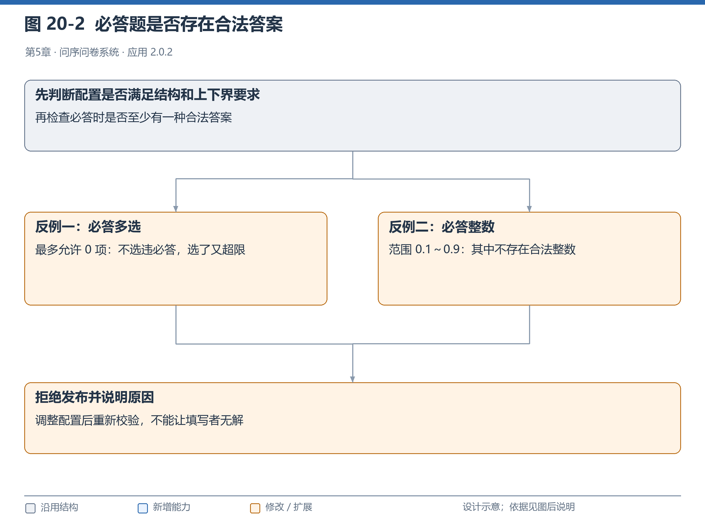
图 20-2 必答题是否存在合法答案
必答多选最多 0 项时，不选违反必答，选择又超过上限；必答整数题范围为 0.1～0.9 时，不存在整数。两者都应在发布配置检查中拒绝。必答文本最多 0 个字符也同理。
空值包括 null、空字符串、空数组和纯空白字符串。必答题遇到空值返回“此题必须回答”；可选题遇到空值归一为 null，不继续执行非空答案校验。但可选题一旦提交非空内容，仍须满足题型要求。
文本采用去除首尾空白后的码点长度，😀 计一个码点。前端不以原生 UTF-16 maxlength 阻止后端允许的输入；组合输入期间与最终输入的反馈也由组件处理。这些能力来自第一阶段修订，第二阶段继续保留。
发布前检查的是“这份定义能不能正式使用”，不要求当时就有填写答案。
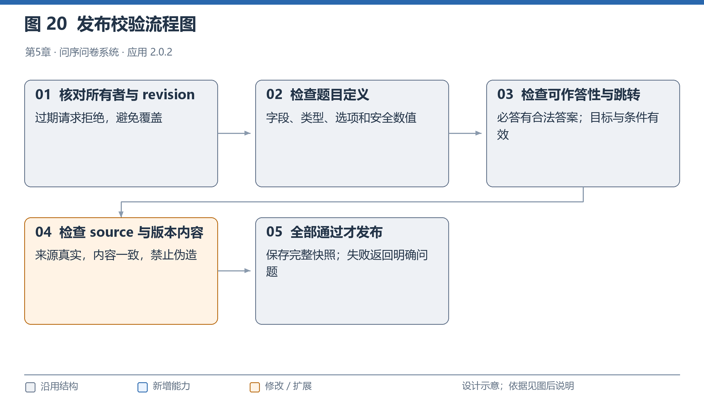
图 20 发布校验流程图
检查覆盖：所有者和 revision；截止时间必须为空或带时区且晚于当前时间；问卷标题非空；1～100 道题；实例 ID 唯一且不为 END；题干和选项文字非空；题型配置有合法答案；第四章中的条件与目标限制；来源真实且内容一致。
全部通过后，在事务中保存完整发布快照并更新问卷发布信息。检查失败时返回原因，不生成一个可填写但定义错误的新版本。draft_issues 只是编辑提示，不能代替发布时重新检查。
设计草稿可以暂时有不完整或失效规则，但仍受请求结构、所有权、revision 和来源保护约束，不代表任何损坏 JSON 都可保存。
填写草稿保存的是过程，不要求每道题已经完成。后端仍检查登录与归属、进行中状态、revision，以及问卷是否允许继续写入，再读取原发布快照。
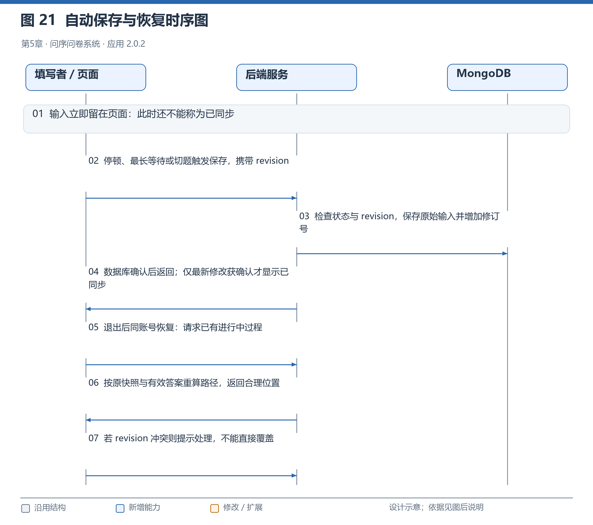
图 21 自动保存与恢复时序图
答案不能包含未知题目；单项允许空值、字符串、安全数字或受限制的字符串数组。数组至多 100 项、每项字符串长度至多 64，草稿单项文本至多 20000 个码点。这个过程输入上限不等于正式文本题的 10000 上限；不完整或超出题目正式限制的内容可暂存为待修正输入，但不参与条件计算。
保存携带读到的 revision，成功后增加修订号。客户端在停顿、最长等待或切题时同步，只有当前最新修改被服务器确认，才能表示已同步；旧请求成功不代表等待期间的新输入也保存了。保存失败保留页面输入并反馈，不能承诺浏览器退出后未同步内容也能跨设备恢复。
恢复先核对过程是否属于当前账号，再读取该过程绑定的快照。服务端不依赖当前题库最新版，且检查快照 Schema 和规则引擎版本是否受支持。
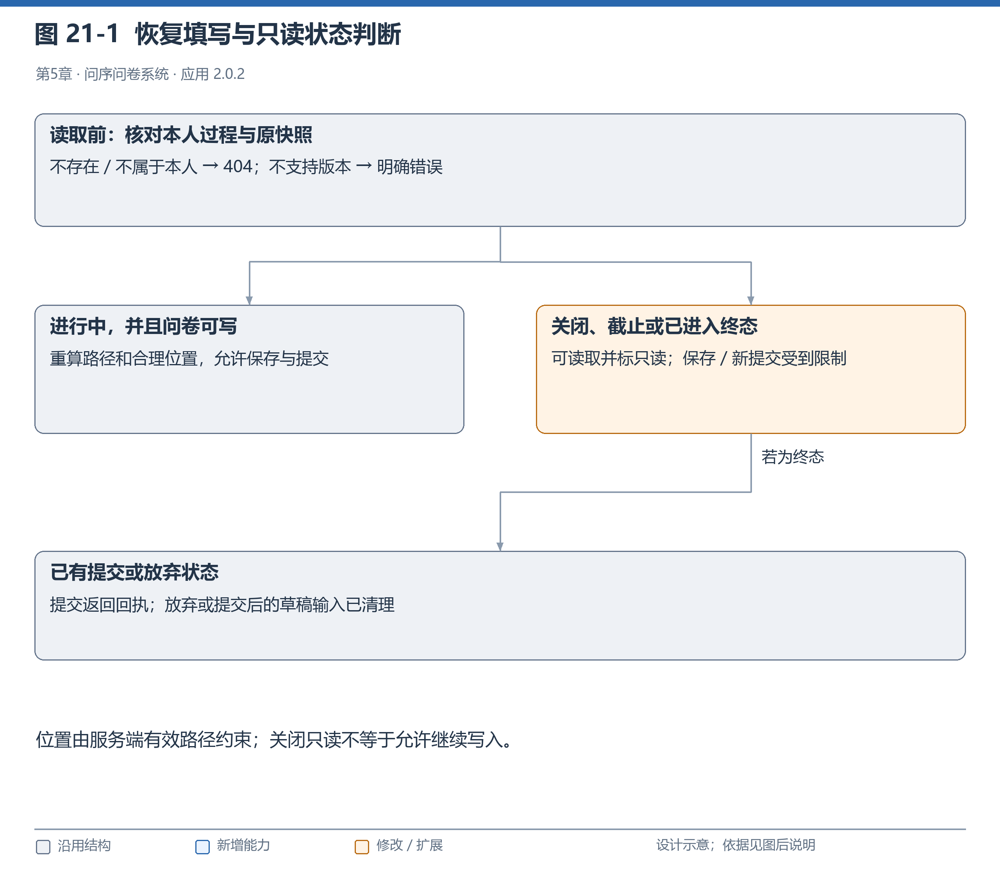
图 21-1 恢复填写与只读状态判断
| 情况 | 读取与后续处理 |
|---|---|
| 过程不存在或不属于本人 | 按接口返回 404，不暴露他人草稿 |
| 快照版本不受支持 | 返回明确版本错误，不能猜测执行 |
| 进行中且问卷仍开放 | 重算路径，返回合理位置，允许继续保存和提交 |
| 问卷关闭、截止或不再可写 | 仍可读取过程，标记只读并说明原因；拒绝新增保存和提交 |
| 过程已提交 | 返回终态及回执，原始草稿答案副本已清理 |
| 过程已放弃 | 只读终态，停止保存，已清除原始输入 |
恢复位置只是提示：前面有无效题时应回到需处理的位置；提示题不在当前路径时不能原样采用。开始填写时还检查匿名是否允许、是否已提交过，以及同账号同问卷是否已有进行中过程；并发开始由唯一性保证只产生一份进行中草稿。已有过程恢复时不会因页面默认值改变原匿名选择。
当前支持恢复填写的主流程提交请求携带过程 ID 与 revision，答案以服务器已保存草稿为准，不再发送另一套独立答案。页面应先完成最新保存，再使用对应 revision 提交。
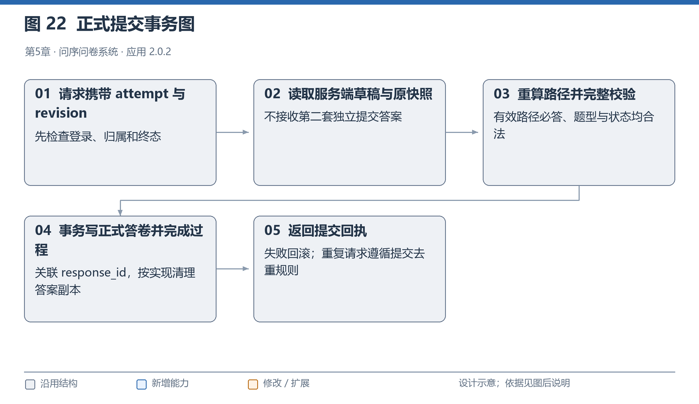
图 22 正式提交事务图
提交依次核对归属、状态、revision、问卷可写状态、原快照与重复填写策略；再规范化数字输入，按第四章规则重新计算路径并检查有效路径答案。可选空值可以通过，路径上的必答和非空错误答案不能通过。
有逐题错误时返回问题，不创建正式答卷；通过后，同一事务写入 response、记录实际路径、将 attempt 标为 submitted、关联 response_id 并清除 raw_answers 副本。匿名答卷不增加实名 user_id，但仍使用受保护的参与标识处理相关限制。
已经提交的同一过程再次请求提交时，返回原回执，不新增第二份答卷；已放弃过程返回冲突。问卷是否允许重复填写是另一条规则：允许时可新开过程，不等于同一过程可以重复生成答卷。
兼容保留的旧接口 POST /api/responses 仍接收签名 token 与 answers，不应与以上过程提交请求混为一谈。它校验凭证有效期、当前账号、绑定的发布版本、问卷状态、匿名与重复策略，仍调用同一规则引擎清理和校验；相同 token 的 attempt_id 已提交时返回原回执。旧接口没有可恢复草稿，不将其请求答案说成来自 attempts.raw_answers。
第二阶段在原账号和问卷归属检查之上，增加来源、题目版本和授权检查。来源由服务器生成，不能仅靠页面锁定字段。
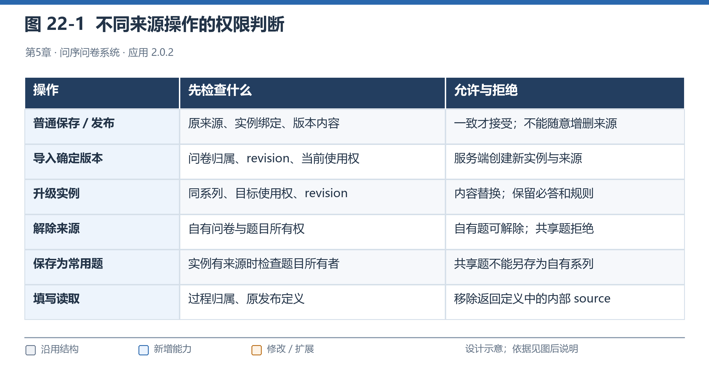
图 22-1 不同来源操作的权限判断
| 操作 | 服务端判断 | 拒绝的情况 |
|---|---|---|
| 普通保存／发布 | 与数据库已有实例来源比较，核对版本内容和实例绑定 | 新建、删改来源，复制凭据，保留旧来源改内容 |
| 删除整道题 | 按问卷编辑与归属规则处理 | 不能用“保留实例但不传 source”代替解除 |
| 导入 | 读取所选版本，检查当前使用权、归档状态和 revision，生成新实例 | 无权、已归档或过期修订 |
| 升级 | 检查目标当前使用权、同系列和 revision，重新生成绑定来源 | 跨系列替换，使用撤销授权或过期草稿 |
| 解除关联 | 专门操作，要求题目属于自己 | 他人共享题不能解除后据为己有 |
| 保存为常用题 | 提取允许内容；有来源时核对题目所有者 | 共享实例不能借另存创建自有系列 |
来源中的系列、版本、问卷、实例、导入人等均需可信。普通保存保留相同 source 只是供核对，不赋予客户端修改资格。发布后的填写定义会移除内部来源字段，服务端快照仍保留追溯依据。
撤销前合法导入的原实例可以继续按原版本保存和发布；再次导入、升级目标需要当前授权。既有使用规则不适用于统计授权撤销，后者会缩小后续查询范围。
统计先检查参数，再确定允许读取的问卷，最后聚合同一确定版本的正式答案，不能先统计所有数据再隐藏标题。
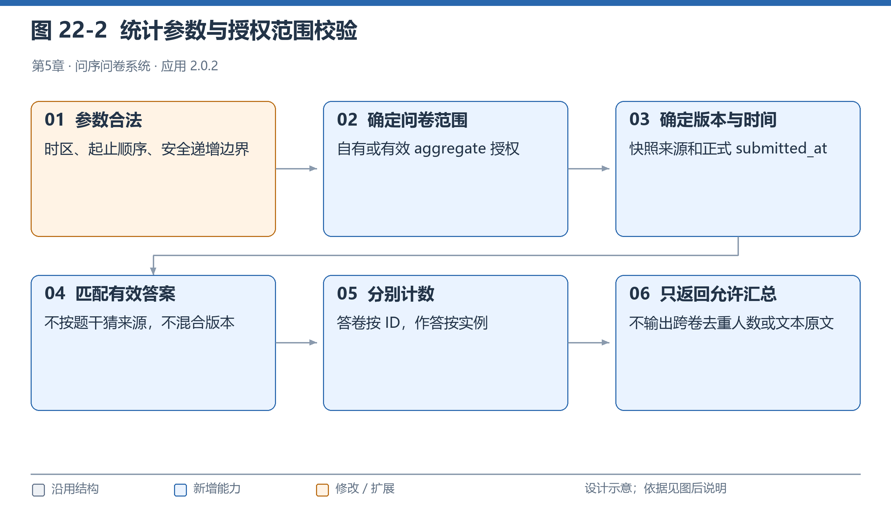
图 22-2 统计参数与授权范围校验
| 内容 | 检查与口径 |
|---|---|
| 时间 | 包含时区，开始不晚于结束；筛选正式 submitted_at，包含端点 |
| 数字分组 | 2～30 个边界，严格递增，有限且绝对值不超过 10^15；显式空数组拒绝 |
| 默认分组 | 未传边界时采用 [0,18,30,45,60,121]，不等于任意数值都落入默认桶 |
| 权限 | 自有问卷与有效指定版本 aggregate 授权；显式越权范围拒绝 |
| 版本 | 按发布快照 source 匹配确定版本，不按题干或类型合并 |
| 份数和条数 | 答卷 ID 去重；同卷重复实例分别贡献作答 |
| 多选比例 | 选项次数除以有效作答条数，比例总和可超过 100% |
| 覆盖与实际作答 | 发布引用该版本但零作答的授权问卷可计入覆盖，不计入有作答问卷 |
例如 2 份答卷含 3 条作答 20、40、60，应得到答卷数 2、作答数 3、均值 40。本轮没有跨问卷去重人数、跨版本合并或文本原文列表。2.0.1 曾修复 safe_number 返回值被忽略的问题，现有拒绝检查不能只停留在调用函数上。
revision 可以理解为“这份数据当前修订到哪次”。页面 A 和 B 都读到 1，A 保存后变为 2，B 再以 1 保存就要拒绝，避免覆盖。
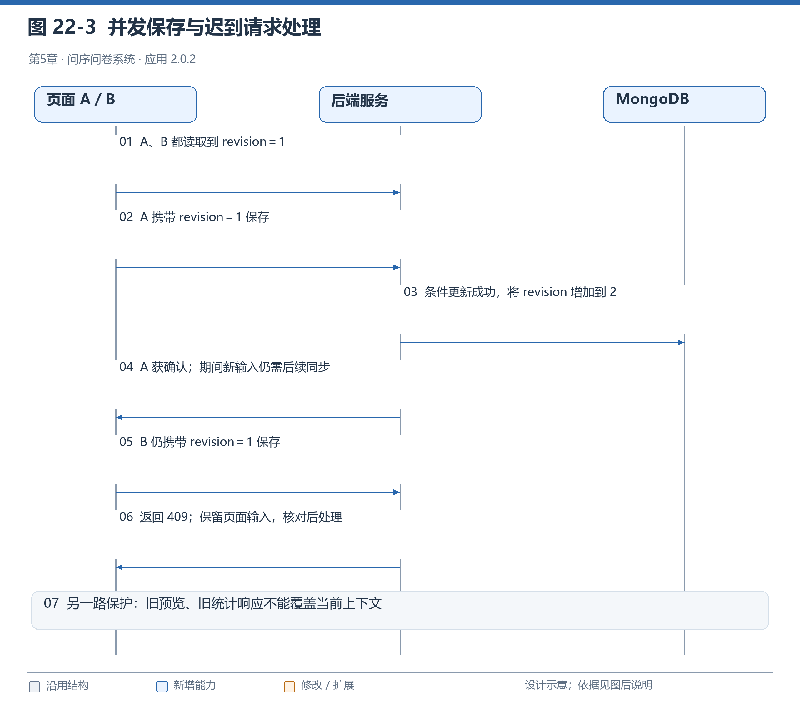
图 22-3 并发保存与迟到请求处理
| 场景 | 处理方式 |
|---|---|
| 修订过期 | 通常返回 409，提示核对或重新加载；不自动强制覆盖 |
| 输入或配置错误 | 通常返回 422 和问题说明；路径错误可包含逐题详情 |
| 无权访问 | 视接口返回 403 或 404，不把所有权限错误写成同一状态码 |
| 登录过期 | 前端暂停同步，保留当前页面输入；同账号重新登录后再尝试保存 |
| 已提交／放弃后迟到保存 | 终态检查拒绝，不重新打开进行中状态 |
| 事务中途失败 | 相关写入回滚，不留下半个版本、半个来源实例或半份提交 |
| 升级预览后继续编辑 | 核对本地草稿及交互上下文；失效后重新预览 |
| 确认升级 | 必须匹配预览，不允许通用操作先自动保存来换 revision |
| 旧预览／统计／明细请求迟到 | 成功、失败和结束回调均核对上下文；不能覆盖当前选择或重开已关闭窗口 |
| 导入与撤销／归档同时发生 | 通过共同协调写入及事务重试重查权限，以成功提交顺序决定 |
事务并不自动解决所有竞争。版本创建还要原子分配序号，撤销和导入要共同写入协调记录；页面异步请求则要使用请求代次和目标上下文。不同问题分别处理，不能用“有事务”概括全部保护。
| 能力 | 第一阶段基础 | 第二阶段变化 | 已有验证入口 |
|---|---|---|---|
| 题型、必答和可作答性 | 四题型、安全数值、Unicode 码点及不可回答配置修订 | 继续保留，不重复算新增 | test_domain.py、test_review_fixes.py、输入组件测试 |
| 路径、恢复和提交 | 有效路径、原快照、revision、终态及事务 | 沿用核心；对外定义隐藏来源 | test_attempts.py、原集成测试；T098、T100 |
| 来源与版本 | 没有独立题目来源管理 | 增加来源绑定、内容一致性、专门操作和固定版本 | T075～T100、T106 |
| 共享与权限 | 原账号和问卷所有权 | 增加确定版本 use 与指定范围 aggregate | T091～T097、T104、T127 |
| 统计参数与入口 | 整卷统计 | 新增跨卷统计；2.0.1 修复边界判断及入口 | T102～T104、T117～T131 |
| 升级确认与异步交互 | 已有保存响应保护 | 2.0.2 增加预览上下文、禁自动保存和迟到请求隔离 | T198～T221 |
| 数据库兼容 | 原集合 Schema 与索引 | 可选来源、五新集合和显式升级保护 | T107～T113 |
第一阶段 1.1.0 与第二阶段 2.0.2 的比较用于说明演进；2.0.1、2.0.2 又是第二阶段内部修订。现有结果仍为 154 后端、90 组件、16 逻辑，共 260 项；本次说明与插图核对不增加业务测试次数。真实浏览器人工验收限制继续保留，不能把图示当成已执行测试。
核对入口：完整测试步骤、输入与输出、逐项测试索引。本章主要依据 domain/questions.py、domain/numbers.py、domain/question_sources.py、services/attempts.py、services/surveys.py、services/question_statistics.py 和前端对应保存、预览及统计逻辑。
本项目使用 Codex 辅助完成需求分析、程序实现、测试和材料整理。AI 的主要作用，是把讨论中的需求转化为具体方案、代码和验证记录。
帮助梳理第二阶段需求。
AI 根据需求文档整理八项新增功能，分析它们与第一阶段的关系，并提出在原系统上扩展独立题目、版本、题库和共享管理的实现思路。
帮助完善 MongoDB 数据设计。
AI 辅助划分新增集合，编写字段约束和索引，并说明题目内容、问卷实例、发布快照和正式答卷之间的关系。设计中保留原有六个集合，增加五个职责明确的新集合。
帮助实现后端业务。
AI 辅助编写常用题保存、导入、版本创建、比较、恢复、共享撤销、题库管理、使用追踪和跨问卷统计等功能，同时增加来源、权限和修订号检查。
帮助实现前端页面和交互。
AI 辅助增加题目管理、历史版本、题库和共享等页面，并在问卷编辑器中加入选题、升级预览和确认操作，补充错误提示与操作保护。
帮助处理兼容与并发问题。
AI 辅助实现显式数据库约束升级、回退保护、版本创建事务，以及导入和撤销授权之间的并发控制，并检查旧问卷、旧快照和旧填写过程是否继续可用。
帮助编写和执行测试。
AI 辅助补充正常流程、非法输入、权限隔离、事务回滚和页面请求先后顺序等测试。现有记录中，后端 154 项、前端组件 90 项、前端逻辑 16 项，共 260 项测试通过，类型检查和生产构建也有通过记录。
帮助整理提交材料。
AI 辅助编写系统说明、数据库设计、API 说明、关键逻辑、测试材料和项目报告，并整理原始失败记录、修改差异、文件清单及独立解压核对结果。
AI 生成的方案和代码需要持续审阅。项目中既出现过业务实现遗漏，也出现过测试和材料处理错误。
最初提出了不必要的来源冗余。
初始方案考虑在正式答卷中增加题目来源字段。经过讨论，发现已有发布快照能够完成追溯，因此调整为只在问卷实例和快照中保留来源，减少重复存储和一致性维护。
遗漏了数字统计的有效校验。
代码调用了安全数值检查函数，却没有使用其返回结果，导致部分无穷大或超范围输入未被正确拒绝。后来修改拒绝条件，并补充非法边界测试。
部分功能有接口，却缺少可用的页面入口。
例如，仅获得统计授权的用户难以进入统计页面，共享接收者也无法方便地查看自己的使用情况。后来分别补充入口，并保持原有权限范围。
题库分页和搜索处理不完整。
选题窗口最初只加载前二十个题库，选中题库后搜索关键词也没有正确参与查询。后来增加后续加载，并将搜索放在分页之前处理。
没有充分处理连续操作和迟到响应。
升级预览与确认可能对应不同实例，旧统计请求也可能覆盖当前选择。后来将操作目标、版本、修订号和本地草稿状态一起核对，并让失效请求不能再更新页面。
部分测试代码自身存在错误。
实际出现过错误的测试钩子返回值、不存在的页面定位文字、错误的模拟响应，以及未允许匿名却使用匿名提交的配置。修正这些问题时保留了业务校验，没有通过放宽权限让错误测试通过。
材料处理也出现过疏漏。
例如临时数据库名称过长、生成脚本遗漏变量、文件比较误纳入运行缓存等。修正后重新核对，同时保留失败过程。此外，早期对“测试全部通过”的表述过于宽泛，后来明确区分自动测试、接口验证和真实浏览器人工验收。
本人主要通过调整需求、审阅方案和提供问题反馈推动项目修改。具体代码编辑、测试执行和材料生成由 Codex 辅助完成，以下按实际参与内容说明。
调整了项目的关注重点。
本人没有只关注功能能否运行，还持续要求考虑可扩展性，避免后续增加功能时需要推倒重来。
明确了第二阶段的修改方式。
要求在第一阶段代码基础上扩展，保留主要功能和核心结构，并清楚记录新旧设计之间的关系。
补充了数据拆分要求。
提出不要把全部数据放在一个集合中，要求根据用途、增长规模和修改方式划分集合，并解释拆分原因。
收紧了冗余设计。
要求谨慎保存重复信息，尤其是能够通过发布快照追溯的来源，不应再次复制到正式答案中。
要求业务规则能够调整。
提出不要把跳转条件、题型限制等逻辑写死，尽量通过结构化配置表达，使后续扩展有明确入口。
补充了填写人数的统计要求。
在回答份数之外要求增加人数口径，避免同一账号多次填写被直接显示为多个人。
明确了多人填写的验收规模。
说明课程项目需要验证多个人填写同一问卷时逻辑是否正确，可以采用并发测试，不必为了展示功能强行增加复杂的公网部署。
增加了未完成填写的保存要求。
提出填写到一半退出后应能恢复，推动系统将进行中的填写与正式答卷分开处理。
要求说明保存成功的含义。
参与确认只有服务器已经确认保存的内容才能承诺恢复，页面不能因为旧请求成功就把最新输入显示为已保存。
补充了多端冲突处理要求。
要求同时打开多个页面或设备时检查修订号，避免较旧内容直接覆盖新的填写结果。
提供了题目配置的审阅问题。
将必答多选最多零项、整数题范围内不存在整数等问题交给 AI，要求发布检查不仅判断上下界，还判断是否存在合法答案。
提供了极端数字输入问题。
要求在转换和入库之前拒绝不安全数值，并返回明确错误，避免异常输入造成服务器错误。
要求加强数据库约束。
提出不能只检查顶层字段，还应约束嵌套题目、答案项和必要字段，使数据库结构与应用约定一致。
推动区分数据库启动与升级。
要求普通启动不直接覆盖旧约束，结构变化通过显式检查和升级完成，并保留失败恢复记录。
补充了编辑器的数据保护要求。
针对关闭问卷覆盖未保存修改、保存响应覆盖等待期间新输入等问题，要求增加相应保护。
要求统一文本长度口径。
提供表情字符长度不一致的问题，要求输入组件和后端使用一致的字符计数方式。
要求截止时间也参与修改提醒。
指出只修改截止时间时容易被误认为没有修改，要求明确提示尚未发布的时间设置。
推动修复功能入口。
对仅统计授权用户缺少统计入口、共享接收者缺少使用入口等问题，要求页面能够完整支持后端已经允许的操作。
推动修复题库查询问题。
要求选题窗口能访问后续题库，选择题库后关键词搜索仍然有效，并避免只筛选当前页。
补充了异步交互的检查条件。
针对升级确认错题、迟到统计覆盖当前版本等问题，要求绑定操作上下文，并处理切换、关闭和请求先后返回的情况。
明确了复杂功能的优先级。
参与确认将跨问卷去重人数、跨版本合并和旧答案人工关联后置，先完成核心要求及兼容验证。
调整了报告和提交材料。
确定四部分目录、Markdown 格式、详细数据库说明和真实 AI 日志，并要求报告逐项说明设计为什么变化、改了哪里以及怎样保证旧功能。
本人主要参与确定系统的使用规则、设计约束和验收方式。以下内容是在需求表达、方案比较和多轮审阅中逐步明确的，具体实现由 Codex 辅助落实。
确定了以原系统为基础继续演进的原则。
第一阶段负责问卷、填写和提交的核心继续保留，新功能围绕原结构扩展。
确定了按职责组织数据的方向。
将问卷、正式答卷、填写过程、独立题目和授权视为不同对象，根据各自生命周期安排存储方式。
参与明确了嵌入与引用的选择依据。
一起读取和发布的内容适合嵌入，独立增长或独立管理的数据适合分开保存并引用，不能只追求集合数量多或少。
参与确定了正式答卷保持简洁的方案。
优先通过问卷发布版本和实例来源追溯题目，不在每条答案中重复保存一套来源。
参与区分了题目系列、题目版本和问卷实例。
系列表示同一道常用题，版本表示某次固定内容，实例表示这道题在某份问卷中的具体使用。
参与明确了可复用内容的边界。
常用题保存题干、题型、选项和校验；必答、位置和跳转由采用它的问卷单独配置。
参与确定了固定版本的使用方式。
问卷采用一个明确版本，题目作者发布新版后，已使用旧版的问卷不会自动改变。
参与确定了主动升级规则。
创建者先选择目标版本、查看差异和受影响规则，再确认升级，避免系统替用户决定采用哪个版本。
参与明确了“最新版本”的含义。
编号最大只表示最近创建，不能据此认定它适合所有问卷，更不能自动替换已有版本。
参与明确了分支版本的关系。
允许基于旧版本继续修改，通过父版本记录演进来源，而不是强制每次都沿最近版本修改。
参与明确了历史恢复方式。
恢复旧内容时生成新版本，分别记录直接父版本和恢复来源，保留操作发生的时间顺序。
参与确定了来源由服务端维护的原则。
导入人、导入时间、版本和实例绑定等信息不能由客户端随意创建或替换。
参与明确了普通编辑与来源操作的区别。
导入、升级和解除关联使用专门操作；普通保存不能通过漏传或替换来源字段达到相同效果。
参与确定了共享的授权单位。
首轮授权作用于确定版本，分享旧版不自动包含未来版本，避免接收者获得未明确授予的新内容。
参与区分了题目使用权和统计访问权。
能导入题目，不代表能看到采用这道题的其他问卷答案；统计访问需要相应问卷的授权。
参与明确了共享题的使用限制。
接收者可以在授权范围内采用题目，但不能利用另存或解除来源，把共享题变成自己的系列再转授。
参与确定了撤销后的已有使用规则。
合法导入的原实例可以继续保存和发布；新增导入或替换其他版本，需要重新检查当前授权。
参与明确了并发操作的生效依据。
导入和撤销同时发生时，以受并发控制保护的成功提交顺序判断，不能只依据点击时间或请求开始时间。
参与确定了升级后待修复草稿的处理方式。
如果新版使旧跳转规则失效，应保留问题并允许修复，修复前禁止发布，不能静默删除规则。
参与明确了题库成员规则。
同一题库可以保存同系列不同版本，但不能重复收录同一个确定版本；题库管理也不产生额外转授权能力。
参与明确了使用追踪的统计方式。
分别展示草稿、当前发布和历史发布使用，并按问卷去重，避免把一份问卷的多次发布算成多份问卷。
参与确定了使用追踪的隐私边界。
用户查看自己的问卷明细；题目所有者按权限查看外部脱敏数量，不能直接读取他人的问卷详情。
参与明确了跨问卷统计口径。
同一确定版本在有权限的问卷范围内汇总，答卷数按提交记录去重，作答条数按匹配实例计数，多选比例以有效作答条数为分母。
参与确定了全过程可追溯的交付方式。
报告需要对应说明原设计、新问题、修改原因、数据变化、程序调整、兼容处理和回归证据；AI 日志则保留真实提示来源、产出、错误和修正过程。
以上贡献主要体现在需求细化、方案取舍和审阅约束。具体集合字段、事务代码、页面实现及测试执行由 Codex 辅助完成，个人贡献按实际参与范围记录。
用户通过对话明确需求优先级，要求保留第一阶段主要功能，提出集合拆分、谨慎冗余和逻辑可配置等约束；随后提供审阅问题，要求增加人数口径、填写恢复、版本隔离与权限保护，并确定 Markdown、四部分目录和详细程度。本轮又明确了 36 张图全部随九章正文展示、语言通俗和不单设附录。
这些是可核对的需求、设计取舍和审阅贡献。具体代码、测试执行及图文生成由 Codex 辅助完成，不能写成作者本人独立编码或亲自完成了全部人工验收。
完整的 40 条 AI 使用日志 单独保存，逐项说明工具、真实提示词或共享任务来源、得到的代码、实际修改及验证结果。多条实例可能来自同一次实施指令，不伪装成四十次独立提示。本章只保留总结和图示，不重复嵌入整份日志。
本次 2026-10-29 新增的是报告可视化及交付核对，不修改业务实现，不增加业务测试数量。2.0.2 真实浏览器人工验收仍待完成，图示、组件测试和历史截图不能替代该项工作。
图 23 用实际问题说明 AI 辅助编程仍需要审阅、复现和修正。
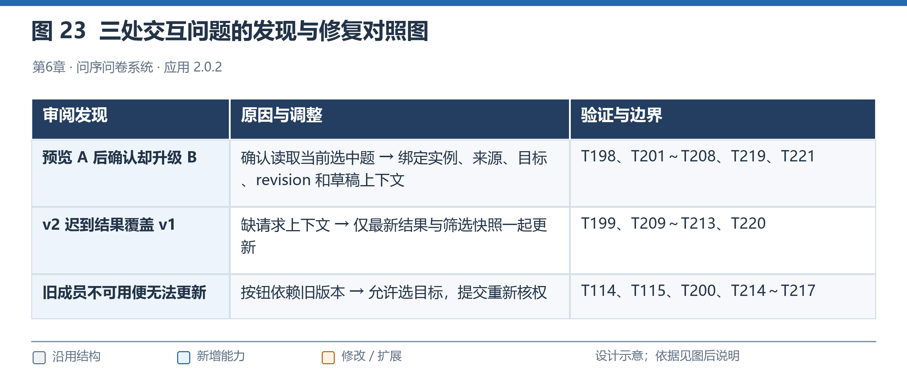
图 23 三处交互问题的发现与修复对照图
用户提出问题及约束，Codex 辅助修改代码、测试和材料。自动测试通过并不等于所有页面已经人工验收；2.0.2 原生弹窗等浏览器复核仍待完成。
核对依据：AI使用日志：实例13、32～38；逐项测试索引。
本阶段不仅检查新增功能能否使用，还检查它们是否影响第一阶段的原有功能。测试分为以下几类：
| 测试类别 | 主要检查内容 |
|---|---|
| 后端测试 | 题型校验、跳转、来源保护、权限、版本、统计及旧功能 |
| 真实 MongoDB 测试 | 集合约束、唯一性、并发写入、事务回滚和数据库升级 |
| 前端逻辑测试 | 条件计算、答案校验和统计计算口径 |
| 前端组件测试 | 页面输入、按钮操作、请求延迟和连续切换 |
| 构建与启动检查 | 类型检查、生产构建、隔离启动和 API 定义 |
| 独立解压复核 | 提交包中的代码、材料和运行结果是否一致 |
本章的 260 项指不同自动测试用例的数量。重复执行同一批测试，不增加用例总数。材料中的 22 步 API 调用链另外记录，也不加进这 260 项。
测试步骤、输入、预期输出、实际输出和结果，详见测试用例与结果。其中，18 个后端业务场景已经补充具体状态码、返回字段或数据库检查结果。
2.0.2 版本的自动测试结果如下。
| 测试类别 | 用例数 | 结果 |
|---|---|---|
| 后端测试 | 154 | 全部通过 |
| 前端组件测试 | 90 | 全部通过 |
| 前端逻辑测试 | 16 | 全部通过 |
| 合计 | 260 | 全部通过 |
| TypeScript 类型检查 | 单独检查 | 通过 |
| 前端生产构建 | 单独检查 | 通过 |
原有 233 项测试继续通过，本次版本增加了 27 项测试，包括 24 项组件测试和 3 项后端测试。原审查中的 4 项诊断也有通过记录，其中与正式回归重复的部分不再次计数。
首次完整结果记录于 2026 年 10 月 25 日。2026 年 10 月 26 日，在独立解压目录中再次执行同一批测试，仍为 260 项通过；包内类型检查、生产构建、隔离启动及 50 个 API 定义检查也通过。
这次独立复测使用了本机已有的 Python 依赖和前端依赖缓存，因此只能说明提交包在该环境下能够运行，不能写成已经完成全新电脑的安装验证。
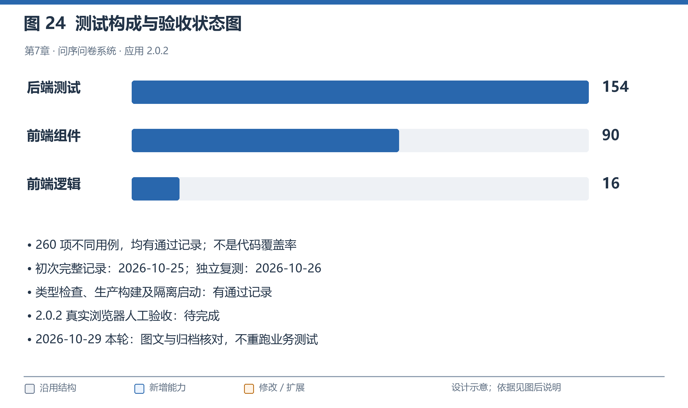
图 24 测试构成与验收状态图
图中展示的是已有测试记录。本次完善报告、插图和测试说明没有重新执行业务测试，也没有增加测试数量。测试项数不等于代码覆盖率，不能据此推导系统容量或性能上限。
下表按需求列出主要操作、输入和实际结果。具体请求、动态 ID 和完整断言可通过对应测试索引核对。
| 需求 | 测试操作与输入 | 实际输出与检查结果 | 结果 |
|---|---|---|---|
| R01 保存常用题 | 将旧问卷中的自有题目保存为常用题 | 当前草稿建立来源；旧发布快照保持不变；新版本统计的覆盖问卷数仍为 0，没有自动关联历史答案 | 通过 |
| R02 共享题目 | 授权指定版本，再撤销授权 | 新导入被拒绝；原合法实例仍能发布和提交；不能通过解除或另存变成自有题 | 通过 |
| R03 修改隔离 | 开始填写 v1，再升级题目并发布新版 | 恢复后仍显示旧题干；提交得到的正式答卷仍属于问卷发布版本 1 | 通过 |
| R04 历史与恢复 | 创建版本、从旧版分支，再恢复历史内容 | 恢复生成 v4；父版本与恢复来源分别正确；v1 内容未被覆盖 | 通过 |
| R05 版本并存 | 同系列两个版本加入题库，并分别使用 | 不同版本可以共存；重复成员返回 409；统计不会自动混合不同版本 | 通过 |
| R06 使用追踪 | 同一问卷使用该题并发布两次 | 使用问卷总数为 1；自己的明细列出发布版本 [2,1]；他人私密标题不返回 |
通过 |
| R07 题库管理 | 重复加入、使用旧修订号、更新已撤销旧成员 | 重复或修订冲突返回 409；旧版失效但新版有授权时，可以选择并更新为新版 | 通过 |
| R08 跨问卷统计 | 两份问卷提交三条数字答案：20、40、60 | 覆盖问卷数 2、有效答卷数 2、有效作答数 3，均值 40，最小值 20，最大值 60 | 通过 |
此外，还验证了以下容易出错的情况：
[a,b] 和 [b,c]，选项次数为 [1,2,1]，比例分别为 50%、100%、50%，合计 200%，符合按有效作答条数计算分母的规则。第二阶段保留第一阶段的回归测试，并针对新旧功能交叉使用的情况补充检查。
| 原有功能 | 保留方式 | 验证内容 |
|---|---|---|
| 注册、登录和账号隔离 | 沿用原会话及所有权检查 | 登录、越权和新资源权限检查 |
| 创建、保存、发布和关闭问卷 | 沿用问卷服务和完整发布快照 | 原流程回归及新增来源检查 |
| 四种题型及限制 | 沿用题型处理器 | 数值范围、必答、多选数量、字符长度和合法答案检查 |
| 按回答跳转 | 沿用规则引擎和实例跳转配置 | 条件判断、路径变化、答案清理和结束问卷 |
| 自动保存与恢复 | 填写过程绑定原发布版本 | 新版发布后旧过程仍可恢复、提交，冲突不会直接覆盖 |
| 匿名、重复填写和并发提交 | 沿用原身份处理、唯一性及事务 | 重复请求、并发提交和失败回滚 |
| 正式答卷和整卷统计 | 保留原答案结构及统计服务 | 新功能不改写旧答案，原统计继续可用 |
| 旧数据读取 | 旧题允许没有来源字段 | 第一阶段样本升级、读取和回退保护 |
代码差异记录也用于核对哪些模块保留、哪些模块修改。不过，文件内容相同只能证明代码未变，不能单独证明行为正确，因此仍需要与实际回归结果结合判断。
2026 年 10 月 26 日，使用真实 MongoDB 临时数据库执行了材料中的 API 调用链，检查文档示例是否与实现一致。
| 操作与输入 | 实际输出 | 结果 |
|---|---|---|
| 创建数字题 v1、v2 | 同系列生成两个固定版本，父关系正确 | 通过 |
| 创建题库、加入 v1 并共享 | 成员和授权记录指向确定版本 | 通过 |
| 导入 v1、发布并开始填写 | 生成实例、发布快照和旧填写过程 | 通过 |
| 升级为 v2 并再次发布 | 新发布成功，旧填写过程没有切换版本 | 通过 |
| 旧过程保存答案 25 并提交 | 正式答卷仍属于发布版本 1 | 通过 |
| 分别查询 v1、v2 统计 | v1 有 1 条作答、均值 25；v2 覆盖 1 份问卷但作答数为 0 | 通过 |
| 写入十一集合的脱敏示例 | 各集合样本均被当前 Schema 接收 | 通过 |
| 直接写入缺字段的答卷文档 | MongoDB 拒绝，错误码为 121 | 通过 |
| 清理临时数据库 | 本次创建的测试库已清理 | 通过 |
这些记录用于验证材料示例和旧版本兼容，不作为新增业务测试计入 260 项。完整过程见测试证据中的 API 调用链记录和 MongoDB 设计核对记录。
历史结果用于说明项目如何逐步完善，不与当前 260 项相加。
| 版本 | 后端 | 组件 | 前端逻辑 | 合计 |
|---|---|---|---|---|
| 2.0.0 | 136 | 56 | 16 | 208 |
| 2.0.1 | 151 | 66 | 16 | 233 |
| 2.0.2 | 154 | 90 | 16 | 260 |
2.0.0 已有部分真实浏览器记录，包括创建年龄题版本、加入题库、导入问卷、发布、填写 25 并查看统计。
后续审阅发现，208 项测试通过仍遗漏了数字统计边界、统计入口、使用查询入口、题库分页和题库内搜索等问题。2.0.1 修复这些问题，增加 25 项测试，并在隔离临时库中进行了相应浏览器检查。
2.0.2 又修复了升级确认错题、迟到统计覆盖当前版本，以及旧题库成员失效后无法选择有效新版等交互问题，增加 27 项测试。
首次失败、修正过程和最终通过记录均保留。历史浏览器记录只证明对应版本、对应操作的检查情况，不能代替当前版本所有页面的人工验收。
第二阶段的困难主要来自两方面：一是新增需求改变了题目的管理方式，需要补充版本、来源和权限设计；二是实际实现中出现了校验遗漏、页面入口不完整和连续操作错误。
两类问题需要分别说明。P01～P06、P10 是设计时需要解决的问题；P07～P09 是 2.0.0 阶段实际发现的问题，P11～P15 属于 2.0.1 修订，P16～P18 属于 2.0.2 修订。
| 编号 | 遇到的问题 | 产生原因或影响 |
|---|---|---|
| P01 | 无法可靠追踪同一道题在不同问卷中的使用 | 第一阶段的题目 ID 只区分当前问卷内的题目，没有独立的题目身份 |
| P02 | 题目修改可能影响旧问卷 | 如果旧问卷始终读取题目的最新内容，过去答案的含义可能随之改变 |
| P03 | 客户端可能伪造题目来源 | 仅接收页面传来的来源字段，不能证明该题确实经过合法导入 |
| P04 | 导入与撤销授权可能同时发生 | 只读取授权、再写问卷，不一定与撤销操作产生写入冲突 |
| P05 | 题目使用权与答案访问权容易混淆 | 允许别人采用题目，不代表允许其查看相关问卷的数据 |
| P06 | 升级题目后，原跳转规则可能失效 | 新版本可能删除选项或改变题型，而问卷仍保留原规则 |
| P07 | 旧数据库回退测试出现断言失败 | 测试错误地要求第二阶段新增集合也恢复成不存在的旧约束 |
| P08 | 旧数据迁移测试被新格式数据干扰 | 共用测试数据库中混入了此前测试产生的题目来源信息 |
| P09 | 窄屏下共享入口被隐藏 | 原导航样式隐藏了最后一项，导致新增入口不可见 |
| P10 | 答卷数和作答条数容易混算 | 一份答卷可以包含两个同版本实例，展开后会得到多条答案 |
| P11 | 非法数字分组边界未被完整拒绝 | 调用了安全数值函数，却忽略了函数返回的判断结果 |
| P12 | 只有统计授权的用户找不到统计入口 | 页面入口依赖题目使用列表，而统计授权不等于题目使用授权 |
| P13 | 共享接收者被引导到无权访问的历史页面 | 使用查询与所有者的历史管理入口放在一起 |
| P14 | 选题窗口只能选择前二十个题库 | 页面只请求题库列表第一页，没有继续加载 |
| P15 | 选择题库后搜索不生效 | 搜索关键词没有传给题库成员查询接口 |
| P16 | 预览 A 题后可能确认升级 B 题 | 确认时重新读取当前选中题目，没有绑定预览对象 |
| P17 | 页面显示的统计可能属于旧版本 | 较早请求返回较晚，覆盖了用户当前选择的查询结果 |
| P18 | 旧版本授权失效后无法更新到有效新版 | 页面根据旧版本是否可用，直接禁用了更新入口 |
这些问题说明，接口能够返回正确结果，并不代表页面操作已经完整；已有测试全部通过，也不代表所有边界都已经覆盖。
第一阶段的问卷没有独立题目来源，但仍保存着完整题目内容。第二阶段不能要求这些旧问卷必须补齐来源后才能继续使用。
因此，兼容处理需要满足两点：
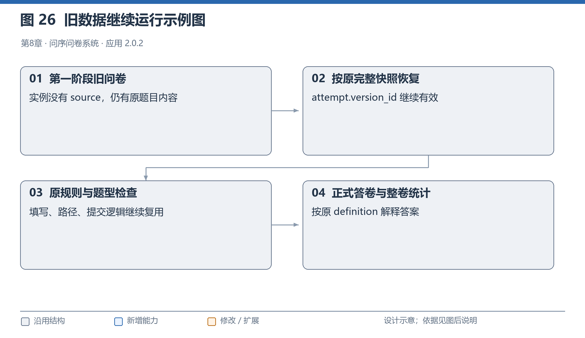
图 26 旧数据继续运行示例图
例如，把旧问卷中的年龄题另存为常用题，只会为当前草稿建立新的来源关系。已经发布的历史快照和旧答案保持原样，不能仅凭题干相同就自动合并。
另一个兼容问题是：题目作者修改内容后，已经采用旧版的问卷怎么办？
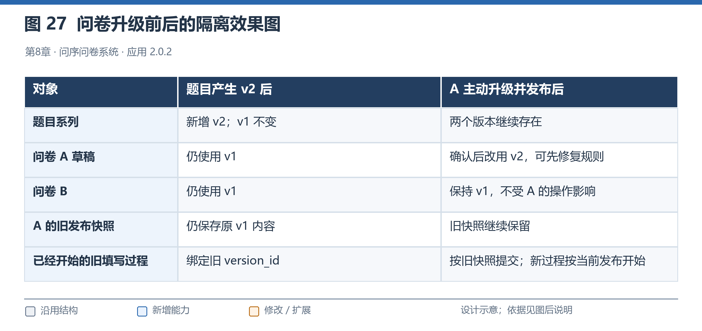
图 27 问卷升级前后的隔离效果图
问卷 A 可以主动升级，问卷 B 继续使用旧版。已经开始的填写过程仍读取原发布快照。这样，题库内容更新不会在填写中途替换题目，也不会改变历史答案的解释。
已有测试检查了旧快照不变、旧填写过程在新版发布后继续提交，以及旧数据约束升级和回退保护。具体依据包括 T075、T099、T100、T106～T108。
跨问卷统计不能直接把展开后的答案行数当作答卷数，更不能当作人数。
例如，一份答卷中出现两个同版本实例，就会贡献两条作答，但仍然只有一份答卷。
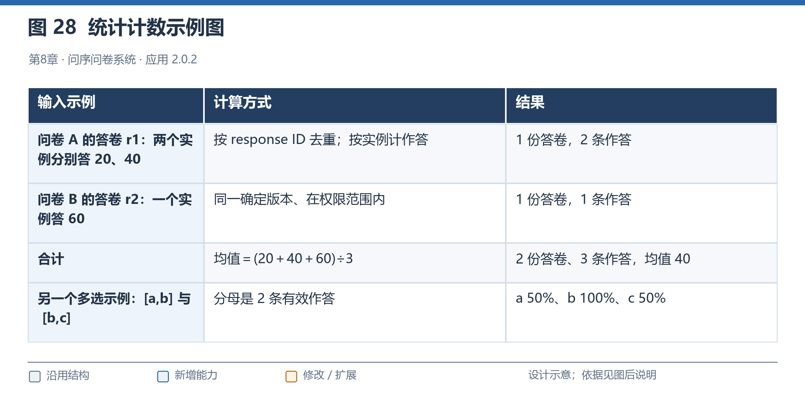
图 28 统计计数示例图
已有测试中，两份问卷收到两份答卷，共包含三条数字作答：20、40、60。因此，答卷数为 2，作答条数为 3，平均值为 40。
多选题也需要明确分母。两条回答分别为 [a,b] 和 [b,c] 时，选项比例为 50%、100%、50%，相加为 200% 是正常结果，因为每条回答可以选择多个选项。
本轮跨问卷统计没有实现去重人数，不能把作答条数换名显示为人数。相关测试见 T102、T103。
用户导入题目时，题目所有者可能同时撤销授权。如果只在导入开始时检查一次授权，就可能出现检查时有效、写入时已经撤销的情况。
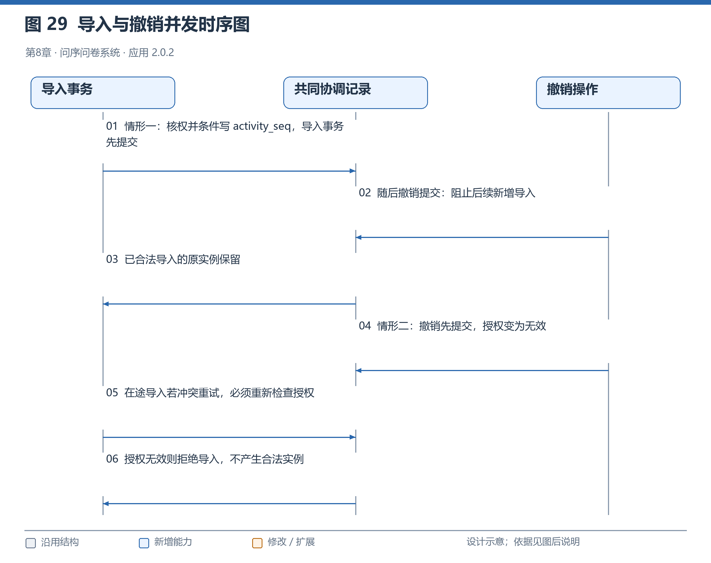
图 29 导入与撤销并发时序图
系统需要明确两种结果：
这需要授权检查和写入操作共同配合。发生事务冲突并重试时，还要重新读取授权，不能继续使用第一次检查的结论。相关测试通过受控执行顺序分别验证这两种情况，见 T094～T097。
针对第八章的问题，第二阶段采用了增加独立题目管理、固定历史内容、分开权限以及补充交互保护的方式。修改集中在题目管理、问卷编辑和新增统计层，原填写与提交核心继续复用。
| 问题 | 具体修改 | 验证方式 |
|---|---|---|
| P01 | 增加题目系列和确定版本，问卷内继续使用实例 ID | 同系列多问卷、多实例及旧题测试 |
| P02 | 实例保存内容，发布保存完整快照 | 比较旧快照，验证旧填写过程仍可提交 |
| P03 | 导入、升级和解除使用专门操作，普通保存核对原来源 | 来源篡改、复制、删除和共享另存拒绝测试 |
| P04 | 条件写入共同协调记录，事务重试时重新检查授权 | 控制导入与撤销、归档的两种提交顺序 |
| P05 | 分开使用授权和统计授权，先确定权限范围再统计 | 越权拒绝、授权后可见、撤销后排除 |
| P06 | 保留待修复草稿，发布时重新完整校验 | 无效规则可保存，修复前发布被拒绝 |
| P07 | 将旧约束回退断言限定到原集合 | 纯第一阶段样本回归 |
| P08 | 单独构造不含新来源的旧样本，保留降级保护 | 旧样本可回退，新业务数据拒绝仅恢复旧约束 |
| P09 | 修正导航显示样式 | 对应版本的窄屏浏览器记录 |
| P10 | 答卷按 ID 去重，作答按实例计数 | 两份答卷、三条作答及多选分母测试 |
| P11 | 将安全数值判断结果用于拒绝条件 | 无穷大、非数值和越界边界检查 |
| P12 | 在有效统计授权记录旁增加入口 | 仅统计授权用户的接口与组件测试 |
| P13 | 提供独立使用情况入口 | 接收者只查自己的使用，不调用所有者历史接口 |
| P14 | 增加题库后续加载和失败重试 | 第二页及第 21 个题库可达测试 |
| P15 | 传递关键词，对可读固定版本先搜索再分页 | 关键词、分页和私密标题保护测试 |
| P16 | 预览绑定实例、来源、目标、修订号和本地草稿状态 | 切题、延迟响应、草稿变化及确认参数测试 |
| P17 | 仅最新请求更新结果，结果与筛选范围一起保存 | 请求乱序、关闭明细和翻页竞争测试 |
| P18 | 允许选择新版，提交时重新检查目标权限 | 旧版撤销、新版有效及目标再次撤销测试 |
题目修改时创建新版本，不覆盖原文档。用户也可以从旧版继续修改，因此版本编号只表示创建顺序，不代表所有问卷都应该采用编号最大的版本。
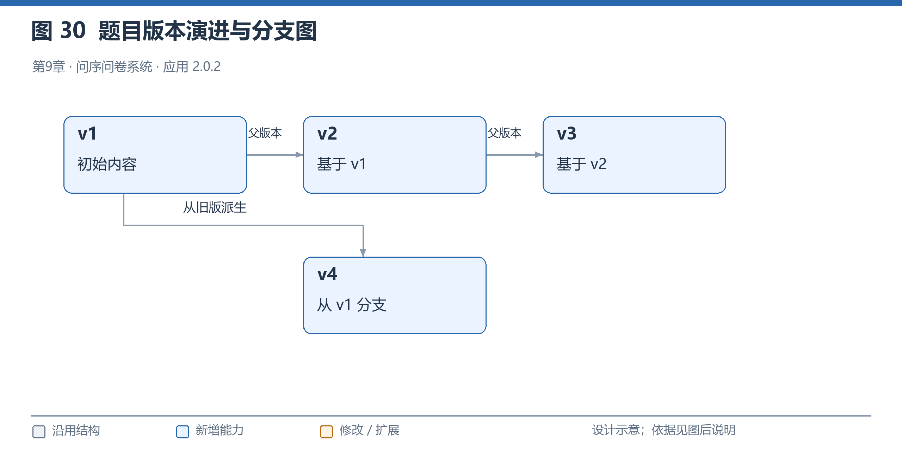
图 30 题目版本演进与分支图
图中 v4 虽然创建得最晚，却可以基于 v1 分支。创建版本时，序号分配、版本插入和最近版本指针更新放在同一事务中，避免失败后只写入一部分。
历史恢复同样创建新版本，但需要额外记录恢复来源。
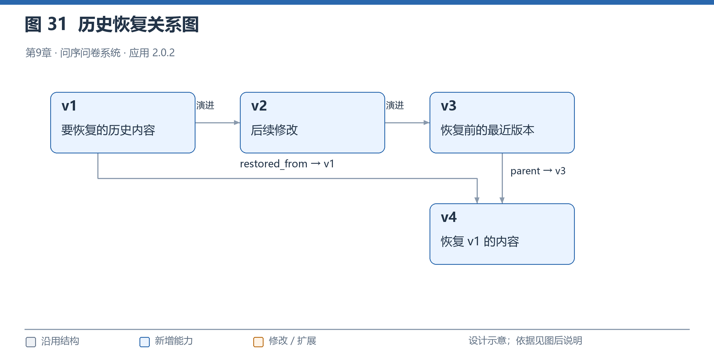
图 31 历史恢复关系图
例如，当前最近版本为 v3，用户恢复 v1 的内容后生成 v4：
parent_version_id 指向 v3，记录直接演进关系。restored_from_version_id 指向 v1，记录内容恢复来源。这里与图 30 是两种独立示例，旧版本在两种情况下都不覆盖。相关验证见 T075～T077、T218。
升级不仅涉及内容替换，还可能影响原跳转规则，因此先预览差异，再确认修改。
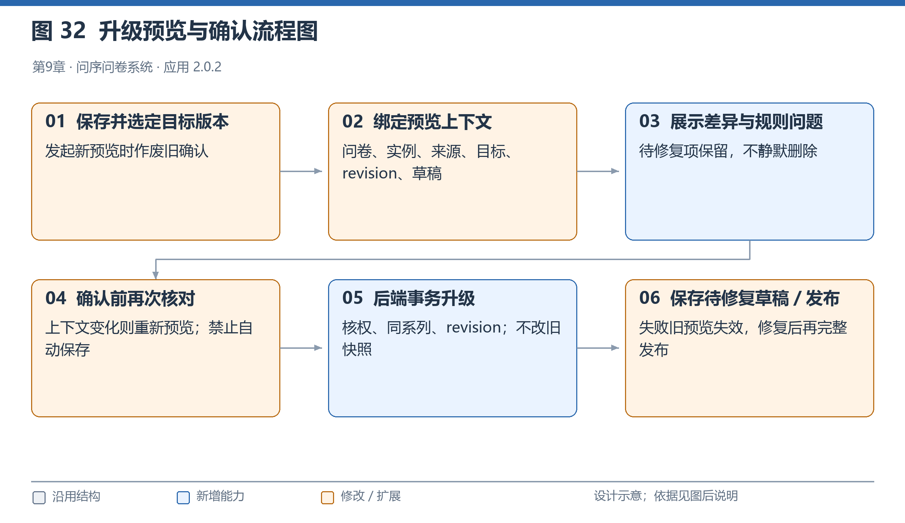
图 32 升级预览与确认流程图
预览记录问卷、实例、来源版本、目标版本、服务器修订号和本地草稿状态。切换题目、改变目标、继续编辑、关闭窗口或离开页面时，原确认失效。
确认阶段禁止自动保存后继续升级。否则，自动保存取得的新修订号可能绕过原预览约束。用户需要保存后重新预览，再确认。
升级后若规则失效，保留原规则并提示问题，允许继续修复草稿；只有完整校验通过才能发布。相关验证见 T099、T198～T208、T219、T221。
系统使用两类授权，分别回答两个问题：
| 授权 | 授权人 | 允许的操作 |
|---|---|---|
use |
题目所有者 | 使用指定题目版本，新增导入问卷 |
aggregate |
问卷所有者 | 查询指定问卷、指定题目版本的汇总统计 |
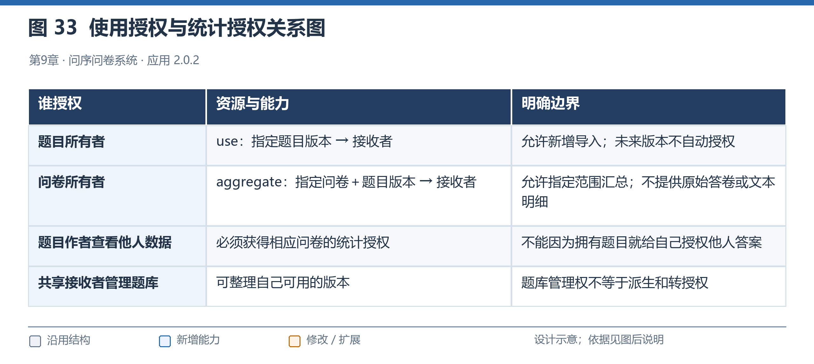
图 33 使用授权与统计授权关系图
题目作者不会因为拥有题目，就自动看到他人问卷中的答案。统计授权也不会开放问卷详情、原始答卷或文本明细。
撤销时，还需要区分既有使用和新的使用。
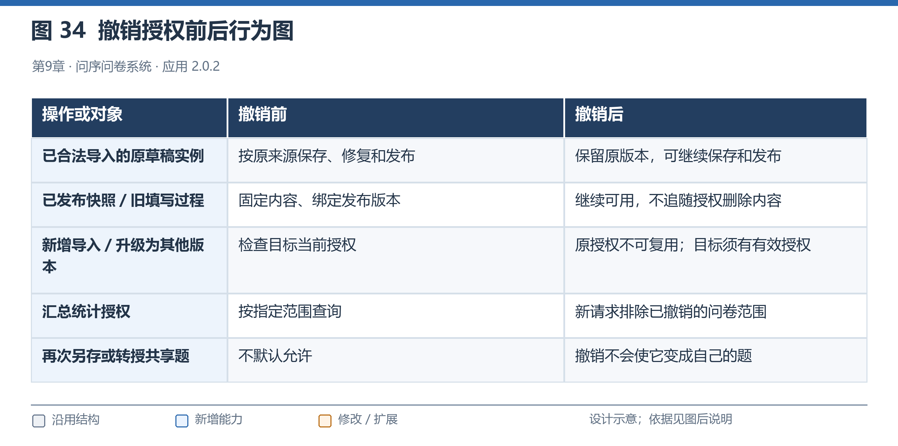
图 34 撤销授权前后行为图
已合法导入的来源绑定原问卷和原实例，可以继续保留；新增导入或替换版本需要检查当前授权。统计授权撤销后，新查询排除相应问卷范围，不能沿用过去的访问资格。
使用追踪只展示自己的问卷明细，题目所有者按权限查看外部脱敏数量。当前没有通用的他人问卷详情授权。相关验证见 T091～T097、T104、T127。
跨问卷统计先筛选有权访问的问卷，再匹配发布快照、题目实例和正式答案。
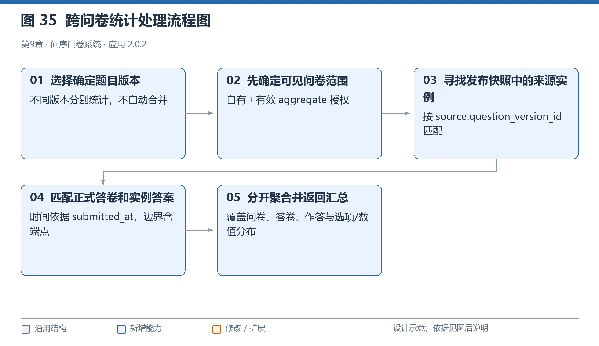
图 35 跨问卷统计处理流程图
统计口径明确如下：
| 指标或条件 | 计算方式 |
|---|---|
| 题目范围 | 同一确定版本，不自动合并不同版本 |
| 问卷范围 | 自有问卷或获得有效汇总授权的问卷 |
| 时间范围 | 按正式提交时间 submitted_at 筛选，包含起止边界 |
| 覆盖问卷数 | 有权限且发布快照引用该版本的问卷数，包括零作答问卷 |
| 有作答问卷数 | 筛选范围内实际收到该版本有效作答的问卷数 |
| 有效答卷数 | 按正式答卷 ID 去重 |
| 有效作答数 | 按匹配的问卷实例计数 |
| 多选比例 | 选项次数除以有效作答条数 |
使用追踪中的几个分类可以重叠：“历史发布使用”包含当前发布，不能将分类数量直接相加。
这些权限范围需要在验收时说明，不能无条件表述为能够查看所有使用问卷或所有问卷的数据。本轮未实现跨版本合并、旧答案自动关联和跨问卷去重人数。相关验证见 T102～T105、T116～T127。
普通启动负责连接、检查已有约束、初始化缺失集合和确保索引存在。已有集合约束的变化通过显式升级处理。
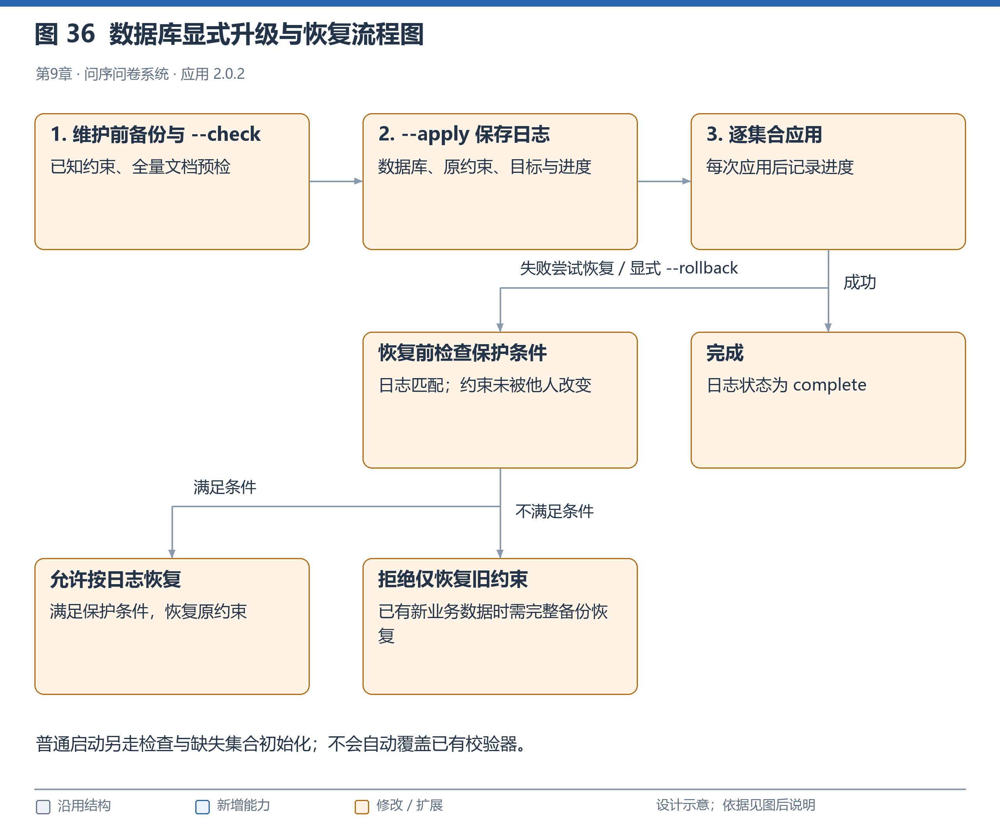
图 36 数据库显式升级与恢复流程图
升级时先检查旧文档是否满足目标结构，再保存原约束、目标信息和应用进度。逐集合应用成功后记录完成；失败时尝试依据日志恢复。
恢复也有条件：日志必须属于当前数据库，约束不能已经被其他操作改变。已有第二阶段题目或来源数据时，程序会拒绝只恢复旧约束，要求按维护前完整备份制定恢复处理。
因此，约束恢复不能代替业务数据备份，也不能承诺任意时刻都能无条件降级。相关验证见 T107、T108。